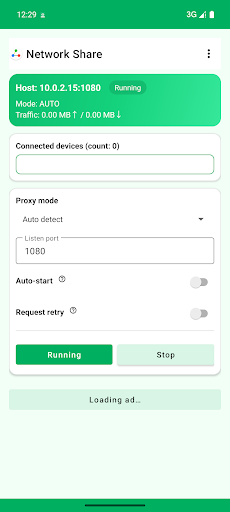
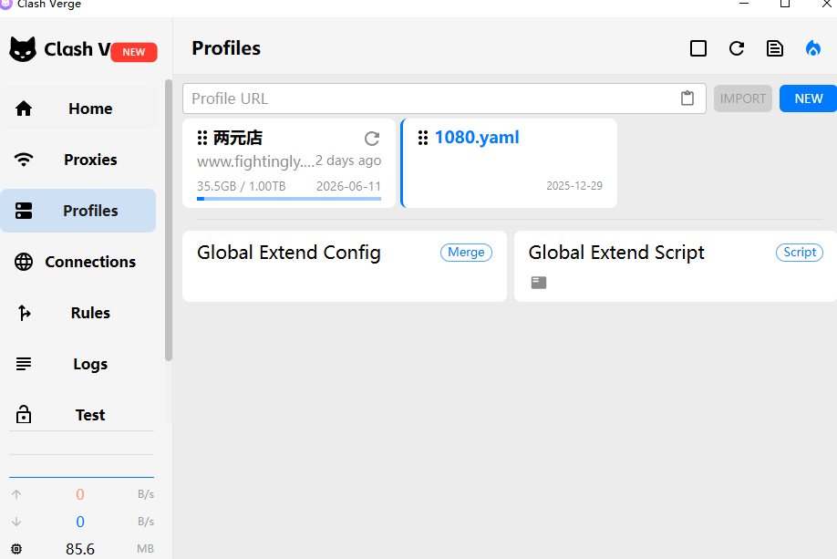
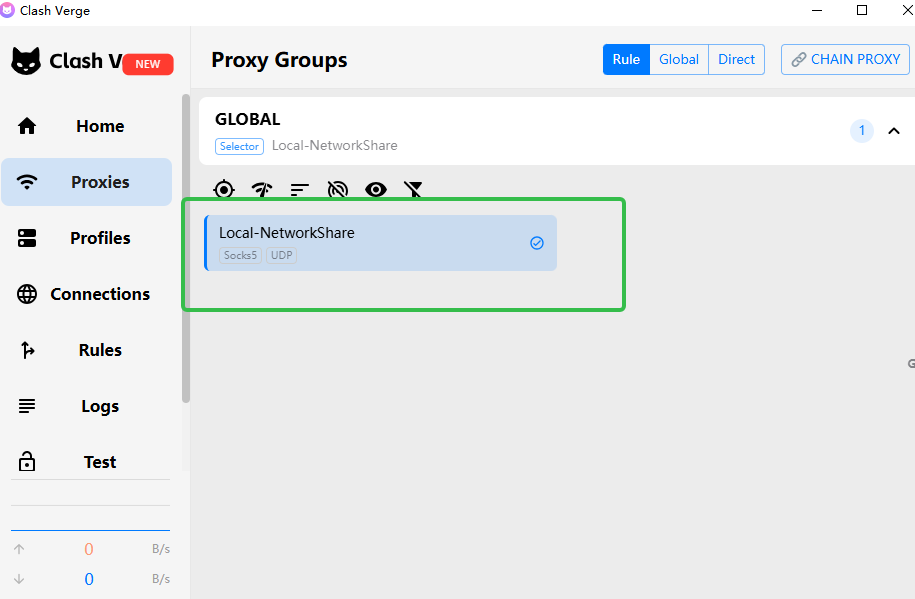
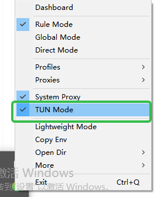
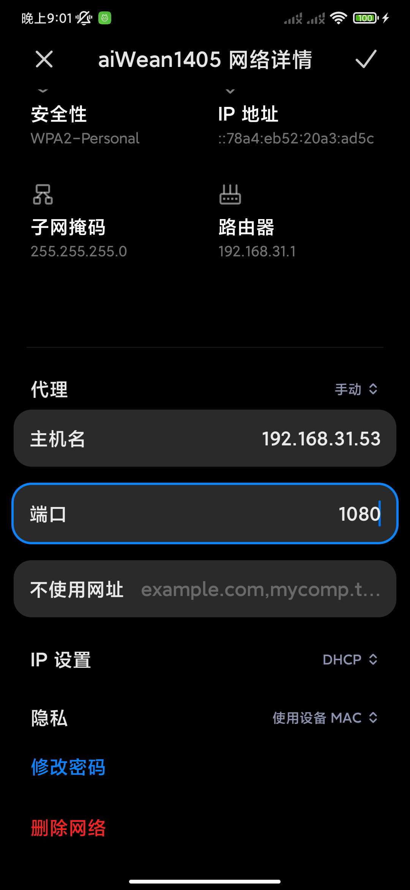

This document applies to VPN Share Hotspot - Tethering, provided and operated by aiwean, the developer listed on Google Play. The app is also named Network Share within its interface.Contact:wenyuanshuai@gmail.com.
Supports full‑tunnel VPN proxy and LAN proxy; set host IP + port as needed.
If you have any questions during setup, you can contact me at wenyuanshuai@gmail.com. I will reply within 24 hours.
Purpose
Use this device as a LAN proxy gateway on the same Wi‑Fi/hotspot; other devices forward traffic via this host (can stack with host VPN). Supports simultaneous connections from multiple devices.
Configuration parameters

Host: 10.0.2.15:1080 Host IP: 10.0.2.15 Host port: 1080 Replace the example IP and port with your host's actual values. These two parameters will be used later in the setup. If the Listener Port is unavailable or in use, choose any port between 1024–49151; functionality is the same.
Host (with VPN) steps
Open the app, pick proxy mode (recommend “Auto-detect”) and port (default 1080).
Ensure host and clients are on the same LAN; port not occupied.
Tap “Start Sharing”.
For stable sharing service, disable battery optimization for this app in system settings, and allow auto-start (if available) and background running (if available).
Full‑tunnel VPN proxy
Install Clash on another device, download the generated YAML first, then import it in Clash via file import (direct link subscription is not supported currently). Use this when you want full‑device VPN proxying. The IP and port must match the host (with VPN) service you started.
Open Clash and drag the downloaded YAML file into the window to import.
1

Open Clash
2

Drag YAML to import
Windows / macOS: Enable Full/TUN mode
1

Switch to Full/TUN and enable
LAN proxy / Wi‑Fi LAN proxy
Configure this on other devices. After configuration, they can share the host's VPN. Due to system restrictions it typically supports only HTTP/HTTPS, and some apps can bypass the proxy settings, which may cause VPN sharing to fail, but in most cases it still works.
Android: Wi‑Fi details → Proxy = Manual; host = host IP, port = host port. Or set HTTP/HTTPS in apps.

iOS: Settings → Wi‑Fi → current network → Configure Proxy = Manual; server = host IP, port = host port (HTTP/HTTPS).
Windows: Settings → Network & Internet → Proxy → Manual; address = host IP, port = host port (HTTP/HTTPS); proxy bypass = localhost;127.*;192.168.*;10.*;172.16.*;172.17.*;172.18.*;172.19.*;172.20.*;172.21.*;172.22.*;172.23.*;172.24.*;172.25.*;172.26.*;172.27.*;172.28.*;172.29.*;172.30.*;172.31.*.
macOS: System Settings → Network → current interface → Details → Proxies; check HTTP/HTTPS (or SOCKS5), server = host IP, port = host port.
Other devices: fill host IP + host port in HTTP/HTTPS/SOCKS5 proxy settings supported by the device/app.
Enhanced mode (Inbound relay)
Use case: The VPN blocks inbound connections from LAN devices to the host, and the VPN supports features like “app exclusion/per‑app bypass.”
How to use: First install the inbound‑relay plugin (companion component) and grant permissions as prompted. In the VPN’s per‑app/exclusion list, set this plugin to direct connection (do not go through the VPN). Then set the proxy on other devices to the host IP and host port, and keep the gateway service running on the host.
How it works: The plugin handles local listening and LAN communication, while the main app handles proxying and VPN egress. The two cooperate and forward traffic locally on the same device.
Notes: The plugin must be excluded from the VPN; otherwise LAN connections will be hijacked by the VPN and become unavailable. If you’re not sure whether the configuration is correct, open the plugin app and check its status indicators.
Enhanced mode (Outbound relay)
Use case: The VPN blocks inbound connections from LAN devices to the host, and the VPN does not support features like “app exclusion/per‑app bypass.”
How to use: On the main device, enable the VPN and turn on the outbound‑relay switch, then tap Scan. On the companion device, turn off the VPN and turn on the outbound‑relay switch; it will display a QR code. Use the main device to scan the QR code to establish the connection.
How it works: Enhanced mode adds a companion device and moves the proxy service to that device. The host (with VPN) makes outbound connections to the companion device, brings the data back, and then initiates requests locally.
Notes: The companion device can also be configured like other devices (full‑tunnel VPN proxy / LAN proxy / Wi‑Fi LAN proxy) to use the main device’s VPN. If the companion device needs a full‑tunnel VPN proxy via Clash, turn off Clash (VPN), connect to the main device first, then turn Clash (VPN) back on after the connection is established. The system currently distinguishes the main device from companion devices based on whether VPN is enabled.
استخدم الجهاز كبوابة وكيل داخل نفس شبكة Wi‑Fi/نقطة الاتصال؛ تُمرَّر حركة الأجهزة الأخرى عبر هذا المضيف (يمكن تكديس VPN المضيف). يدعم الاتصال المتزامن لعدة أجهزة.
شرح معلمات الإعداد
المضيف: 10.0.2.15:1080 عنوان IP للمضيف: 10.0.2.15 منفذ المضيف: 1080 استبدل قيم IP والمنفذ في المثال بالقيم الفعلية لجهاز المضيف. سيُستخدم هذان المعلمان لاحقًا في الإعداد. إذا أظهر Listener Port أنه غير متاح أو قيد الاستخدام، فاختر أي منفذ بين 1024–49151؛ لا يوجد فرق في الوظيفة.
خطوات المضيف (مع VPN)
افتح التطبيق، واختر وضع الوكيل (يُنصح بـ “اكتشاف تلقائي”) والمنفذ (الافتراضي 1080). الإصدار الحالي يوجّه كل الحركة عبر الوكيل.
تأكد أن المضيف والعميل على نفس شبكة LAN وأن المنفذ غير مشغول.
اضغط “بدء المشاركة”.
لضمان استقرار خدمة المشاركة، عطّل تحسين البطارية لهذا التطبيق في إعدادات النظام، واسمح بالتشغيل التلقائي (إن وجد) والعمل في الخلفية (إن وجد).
وكيل VPN كامل النطاق
ثبّت Clash على جهاز آخر، ثم نزّل ملف YAML المُنشأ أولًا، وبعدها استورده في Clash عبر استيراد ملف (الاشتراك المباشر عبر الرابط غير مدعوم حاليًا). استخدمه عندما تريد توجيه كل حركة الجهاز عبر الـVPN. يجب أن يطابق عنوان IP والمنفذ خدمة المضيف (مع VPN) التي قمت بتشغيلها.
Open Clash and drag the downloaded YAML file into the window to import.
1Open Clash
2Drag YAML to import
Windows / macOS: Enable Full/TUN mode
1Switch to Full/TUN and enable
وكيل LAN / وكيل Wi‑Fi LAN
يُضبط هذا على الأجهزة الأخرى. وبعد الإعداد يمكنها مشاركة VPN الخاص بالمضيف. وبسبب قيود النظام فهو يدعم عادةً HTTP/HTTPS فقط، وقد تتجاوز بعض التطبيقات إعدادات الوكيل مما قد يؤدي إلى فشل مشاركة VPN، لكنه يعمل في معظم الحالات.
Android: تفاصيل Wi‑Fi → الوكيل = يدوي؛ الخادم = IP المضيف، المنفذ = منفذ المضيف. أو املأ HTTP/HTTPS في التطبيقات.
iOS: الإعدادات → Wi‑Fi → الشبكة الحالية → تكوين الوكيل = يدوي؛ الخادم = IP المضيف، المنفذ = منفذ المضيف (HTTP/HTTPS).
Windows: الإعدادات → الشبكة والإنترنت → الوكيل → يدوي؛ العنوان = IP المضيف، المنفذ = منفذ المضيف (HTTP/HTTPS)؛ قائمة التجاهل: localhost;127.*;192.168.*;10.*;172.16.*;172.17.*;172.18.*;172.19.*;172.20.*;172.21.*;172.22.*;172.23.*;172.24.*;172.25.*;172.26.*;172.27.*;172.28.*;172.29.*;172.30.*;172.31.*.
macOS: إعدادات النظام → الشبكة → الواجهة الحالية → التفاصيل → الوكلاء؛ فعّل HTTP/HTTPS (أو SOCKS5)، الخادم = IP المضيف، المنفذ = منفذ المضيف.
أجهزة أخرى: أدخل IP المضيف + منفذ المضيف في إعدادات وكيل HTTP/HTTPS/SOCKS5 المدعومة.
الوضع المعزز (ترحيل داخلي)
حالات الاستخدام: يحجب الـVPN الاتصالات الواردة من أجهزة LAN إلى المضيف، ويدعم هذا الـVPN ميزات مثل «استثناء التطبيقات/عدم استخدام VPN لكل تطبيق».
طريقة الاستخدام: ثبّت أولًا ملحق الترحيل الداخلي (المكوّن المساعد) وامنحه الأذونات المطلوبة. في قائمة الاستثناءات/التطبيقات في الـVPN اضبط هذا الملحق على اتصال مباشر (بدون VPN). ثم اضبط الوكيل في الأجهزة الأخرى على IP المضيف ومنفذ المضيف، وأبقِ خدمة البوابة قيد التشغيل على المضيف.
آلية العمل: يتولى الملحق الاستماع المحلي والتواصل مع الشبكة المحلية، بينما يتولى التطبيق الرئيسي الوكيل وخروج الـVPN. يعمل الاثنان معًا على نفس الجهاز لإعادة التوجيه.
ملاحظات: يجب استثناء الملحق من الـVPN، وإلا ستُحتجز اتصالات LAN بواسطة الـVPN وتصبح غير متاحة. إذا لم تكن متأكدًا من صحة الإعداد، افتح تطبيق الملحق وتحقق من مؤشرات الحالة داخله.
الوضع المعزز (ترحيل خارجي)
حالات الاستخدام: يحجب الـVPN الاتصالات الواردة من أجهزة LAN إلى المضيف، ولا يدعم هذا الـVPN ميزات مثل «استثناء التطبيقات/عدم استخدام VPN لكل تطبيق».
طريقة الاستخدام: على الجهاز الرئيسي فعّل الـVPN وشغّل مفتاح الترحيل الخارجي ثم اضغط المسح. على الجهاز المساعد أوقف الـVPN وشغّل مفتاح الترحيل الخارجي؛ سيظهر رمز QR. امسحه بالجهاز الرئيسي لإتمام الاتصال.
آلية العمل: يضيف الوضع المعزز جهازًا مساعدًا وينقل خدمة الوكيل إليه. يتصل المضيف (مع VPN) بالجهاز المساعد اتصالًا خارجيًا، يعيد البيانات ثم ينفذ الطلبات محليًا.
ملاحظات: يمكن للجهاز المساعد أيضًا إعداد الوكيل مثل الأجهزة الأخرى (وكيل VPN كامل النطاق / وكيل LAN / وكيل Wi‑Fi LAN) لاستخدام VPN الجهاز الرئيسي. إذا احتاج الجهاز المساعد إلى وكيل VPN كامل النطاق عبر Clash، فأوقف Clash (VPN) أولًا واتصل بالجهاز الرئيسي؛ وبعد نجاح الاتصال فعّل Clash (VPN) مرة أخرى. يميّز النظام حاليًا بين الجهاز الرئيسي والأجهزة المساعدة بناءً على تفعيل VPN من عدمه.
Zweck
Nutze dieses Gerät im selben Wi‑Fi/Hotspot als LAN‑Proxy-Gateway; andere Geräte leiten den Verkehr über diesen Host (VPN des Hosts kann gestapelt werden). Unterstützt gleichzeitige Verbindungen mehrerer Geräte.
Konfigurationsparameter
Host: 10.0.2.15:1080 Host-IP: 10.0.2.15 Host-Port: 1080 Ersetze die Beispiel‑IP und den Port durch die tatsächlichen Werte deines Host‑Geräts. Diese beiden Parameter werden in der weiteren Konfiguration verwendet. Wenn der Listener-Port nicht verfügbar oder belegt ist, wähle einen beliebigen Port zwischen 1024–49151; die Funktion bleibt gleich.
Schritte auf dem Host (mit VPN)
App öffnen, Proxy-Modus wählen (empfohlen „Automatisch erkennen“) und Port wählen (Standard 1080). Aktuelle Version routet den gesamten Verkehr über den Proxy.
Sicherstellen, dass Host und Clients im selben LAN sind und der Port frei ist.
„Freigabe starten“ tippen.
Für einen stabilen Betrieb der Freigabe deaktivieren Sie in den Systemeinstellungen die Akku-Optimierung für diese App und erlauben Sie Autostart (falls verfügbar) sowie Hintergrundausführung (falls verfügbar).
Volltunnel‑VPN‑Proxy
Installiere Clash auf einem anderen Gerät, lade die erzeugte YAML‑Datei zuerst herunter und importiere sie dann in Clash per Dateiimport (direktes Link‑Abonnement wird derzeit nicht unterstützt). Für vollständiges Geräte‑Routing. IP und Port müssen mit dem gestarteten Host‑Dienst (mit VPN) übereinstimmen.
Open Clash and drag the downloaded YAML file into the window to import.
1Open Clash
2Drag YAML to import
Windows / macOS: Enable Full/TUN mode
1Switch to Full/TUN and enable
LAN‑Proxy / Wi‑Fi‑LAN‑Proxy
Diese Einstellung wird auf anderen Geräten vorgenommen. Nach der Einrichtung können sie das VPN des Hosts mitnutzen. Aufgrund von Systembeschränkungen wird meist nur HTTP/HTTPS unterstützt, und einige Apps können die Proxy‑Einstellungen umgehen, was dazu führen kann, dass die VPN‑Freigabe fehlschlägt; in den meisten Fällen funktioniert es dennoch.
Android: WLAN-Details → Proxy = Manuell; Host = Host-IP, Port = Host-Port. Oder HTTP/HTTPS in Apps eintragen.
iOS: Einstellungen → WLAN → aktuelles Netzwerk → Proxy konfigurieren = Manuell; Server = Host-IP, Port = Host-Port (HTTP/HTTPS).
Windows: Einstellungen → Netzwerk & Internet → Proxy → Manuell; Adresse = Host-IP, Port = Host-Port (HTTP/HTTPS); Proxy-Ausnahmen: localhost;127.*;192.168.*;10.*;172.16.*;172.17.*;172.18.*;172.19.*;172.20.*;172.21.*;172.22.*;172.23.*;172.24.*;172.25.*;172.26.*;172.27.*;172.28.*;172.29.*;172.30.*;172.31.*.
Andere Geräte: Host-IP + Host-Port in den HTTP/HTTPS/SOCKS5-Proxyfeldern des Geräts/der App eintragen.
Erweiterter Modus (Interne Weiterleitung)
Einsatzszenario: Das VPN blockiert eingehende Verbindungen von LAN‑Geräten zum Host, und dieses VPN unterstützt Funktionen wie „App‑Ausnahmen/Pro‑App‑Bypass“.
Vorgehen: Zuerst das Inbound‑Relay‑Plugin (Begleitkomponente) installieren und die Berechtigungen erteilen. In der VPN‑Liste für App‑Ausnahmen/Pro‑App den Plugin‑Verkehr auf Direktverbindung setzen (nicht über VPN). Dann auf anderen Geräten den Proxy mit Host‑IP und Host‑Port eintragen und den Gateway‑Dienst auf dem Host laufen lassen.
Funktionsweise: Das Plugin übernimmt lokales Lauschen und LAN‑Kommunikation, die Haupt‑App übernimmt Proxy und VPN‑Ausgang. Beide arbeiten lokal zusammen und leiten den Verkehr weiter.
Hinweise: Das Plugin muss vom VPN ausgeschlossen sein, sonst werden LAN‑Verbindungen vom VPN abgefangen und unbrauchbar. Wenn Sie unsicher sind, öffnen Sie die Plugin‑App und prüfen Sie die Statushinweise.
Erweiterter Modus (Externe Weiterleitung)
Einsatzszenario: Das VPN blockiert eingehende Verbindungen von LAN‑Geräten zum Host, und dieses VPN unterstützt keine Funktionen wie „App‑Ausnahmen/Pro‑App‑Bypass“.
Vorgehen: Auf dem Hauptgerät VPN einschalten und den Outbound‑Relay‑Schalter aktivieren, dann „Scannen“ tippen. Auf dem Begleitgerät VPN ausschalten und den Outbound‑Relay‑Schalter aktivieren; es erscheint ein QR‑Code. Mit dem Hauptgerät scannen, um die Verbindung herzustellen.
Funktionsweise: Der erweiterte Modus fügt ein Begleitgerät hinzu und verlagert den Proxy‑Dienst dorthin. Der Host (mit VPN) stellt eine ausgehende Verbindung zum Begleitgerät her, holt die Daten zurück und führt anschließend die Anfragen lokal aus.
Hinweise: Das Begleitgerät kann wie andere Geräte einen Proxy einrichten (Volltunnel‑VPN‑Proxy / LAN‑Proxy / Wi‑Fi‑LAN‑Proxy), um das VPN des Hauptgeräts zu nutzen. Wenn das Begleitgerät einen Volltunnel‑VPN‑Proxy über Clash benötigt, Clash (VPN) zuerst ausschalten, Verbindung zum Hauptgerät herstellen, dann Clash (VPN) wieder einschalten. Das System unterscheidet derzeit Haupt‑ und Begleitgeräte danach, ob VPN aktiviert ist.
Propósito
Usa este dispositivo como puerta de enlace proxy en la misma red Wi‑Fi/punto de acceso; los demás equipos envían su tráfico a través de este host (puede combinarse con la VPN del host). Admite conexiones simultáneas de varios dispositivos.
Parámetros de configuración
Host: 10.0.2.15:1080 IP del host: 10.0.2.15 Puerto del host: 1080 Sustituye la IP y el puerto de ejemplo por los valores reales del dispositivo host. Estos dos parámetros se usarán en la configuración posterior. Si el Listener Port no está disponible o está en uso, elige cualquier puerto entre 1024–49151; la funcionalidad es la misma.
Pasos en el host (con VPN)
Abre la app, elige el modo de proxy (se recomienda “Detección automática”) y el puerto (predeterminado 1080). La versión actual dirige todo el tráfico por el proxy.
Asegúrate de que el host y los clientes estén en la misma LAN y que el puerto esté libre.
Toca “Iniciar uso compartido”.
Para que el servicio de compartición sea estable, desactiva la optimización de batería de esta app en Ajustes del sistema y permite el inicio automático (si existe) y la ejecución en segundo plano (si existe).
Proxy VPN de túnel completo
Instala Clash en otro dispositivo, descarga primero el YAML generado y luego impórtalo en Clash mediante importación de archivo (la suscripción directa por enlace no es compatible por ahora). Úsalo cuando necesites proxy a nivel de todo el dispositivo. La IP y el puerto deben coincidir con el servicio del host (con VPN) que iniciaste.
Open Clash and drag the downloaded YAML file into the window to import.
1Open Clash
2Drag YAML to import
Windows / macOS: Enable Full/TUN mode
1Switch to Full/TUN and enable
Proxy LAN / Proxy LAN por Wi‑Fi
Esta configuración se hace en otros dispositivos. Tras la configuración, pueden compartir la VPN del host. Por restricciones del sistema suele admitir solo HTTP/HTTPS, y algunas apps pueden omitir la configuración del proxy, lo que puede hacer que el uso compartido de VPN falle; en la mayoría de los casos funciona.
Android: Detalles de Wi‑Fi → Proxy = Manual; host = IP del host, puerto = puerto del host. O configura HTTP/HTTPS en las apps.
iOS: Ajustes → Wi‑Fi → red actual → Configurar proxy = Manual; servidor = IP del host, puerto = puerto del host (HTTP/HTTPS).
Windows: Configuración → Red e Internet → Proxy → Manual; dirección = IP del host, puerto = puerto del host (HTTP/HTTPS); excepciones del proxy: localhost;127.*;192.168.*;10.*;172.16.*;172.17.*;172.18.*;172.19.*;172.20.*;172.21.*;172.22.*;172.23.*;172.24.*;172.25.*;172.26.*;172.27.*;172.28.*;172.29.*;172.30.*;172.31.*.
macOS: Ajustes del sistema → Red → interfaz actual → Detalles → Proxies; marca HTTP/HTTPS (o SOCKS5), servidor = IP del host, puerto = puerto del host.
Otros dispositivos: introduce IP del host + puerto del host en los ajustes de proxy HTTP/HTTPS/SOCKS5 que el equipo o la app admitan.
Modo mejorado (reenvío interno)
Caso de uso: El VPN bloquea conexiones entrantes de dispositivos LAN hacia el host, y este VPN admite funciones como “exclusión de apps/bypass por app”.
Cómo usarlo: Primero instala el plugin de reenvío interno (componente complementario) y concede permisos. En la lista de exclusiones/per‑app del VPN, configura ese plugin como conexión directa (sin VPN). Luego configura el proxy en otros dispositivos con la IP y el puerto del host, y mantén el servicio de gateway en el host.
Cómo funciona: El plugin se encarga de la escucha local y la comunicación LAN; la app principal se encarga del proxy y de la salida VPN. Ambos cooperan localmente para reenviar el tráfico.
Notas: El plugin debe quedar excluido del VPN; de lo contrario, el VPN interceptará las conexiones LAN y no funcionarán. Si no estás seguro de la configuración, abre la app del plugin y revisa sus indicadores de estado.
Modo mejorado (reenvío externo)
Caso de uso: El VPN bloquea conexiones entrantes de dispositivos LAN hacia el host, y este VPN no admite funciones como “exclusión de apps/bypass por app”.
Cómo usarlo: En el dispositivo principal, activa el VPN y el interruptor de reenvío externo, y pulsa Escanear. En el dispositivo complementario, desactiva el VPN y activa el reenvío externo; se mostrará un código QR. Escanéalo con el dispositivo principal para establecer la conexión.
Cómo funciona: El modo mejorado añade un dispositivo complementario y mueve el servicio de proxy allí. El host (con VPN) se conecta hacia el dispositivo complementario, trae los datos y luego realiza las solicitudes localmente.
Notas: El dispositivo complementario también puede configurar el proxy como los demás (proxy VPN de túnel completo / proxy LAN / proxy LAN por Wi‑Fi) para usar el VPN del dispositivo principal. Si necesita un proxy VPN de túnel completo vía Clash, apaga Clash (VPN), conéctate primero al dispositivo principal y luego vuelve a encender Clash (VPN). El sistema distingue actualmente el dispositivo principal de los complementarios según si el VPN está habilitado.
هدف
از این دستگاه در همان شبکه Wi‑Fi/هاتاسپات بهعنوان درگاه پروکسی LAN استفاده کنید؛ ترافیک سایر دستگاهها از این میزبان عبور میکند (میتوان آن را با VPN میزبان ترکیب کرد). از اتصال همزمان چند دستگاه پشتیبانی میکند.
پارامترهای پیکربندی
میزبان: 10.0.2.15:1080 IP میزبان: 10.0.2.15 پورت میزبان: 1080 آیپی و پورت نمونه را با مقادیر واقعی دستگاه میزبان جایگزین کنید. این دو پارامتر در تنظیمات بعدی استفاده میشوند. اگر Listener Port در دسترس نبود یا اشغال بود، هر پورتی بین 1024–49151 را انتخاب کنید؛ عملکرد تفاوتی ندارد.
مراحل میزبان (با VPN)
اپ را باز کنید، حالت پروکسی (پیشنهاد «تشخیص خودکار») و پورت (پیشفرض 1080) را برگزینید. نسخه فعلی تمام ترافیک را از طریق پروکسی هدایت میکند.
مطمئن شوید میزبان و کلاینت در یک LAN هستند و پورت اشغال نشده است.
روی «شروع اشتراکگذاری» بزنید.
برای پایداری سرویس اشتراکگذاری، در تنظیمات سیستم بهینهسازی باتری این برنامه را خاموش کنید و اجرای خودکار (در صورت وجود) و اجرای پسزمینه (در صورت وجود) را مجاز کنید.
پروکسی VPN تمامترافیک
روی یک دستگاه دیگر Clash را نصب کنید، ابتدا فایل YAML تولیدشده را دانلود کنید و سپس از طریق ایمپورت فایل در Clash اضافه کنید (در حال حاضر اشتراک مستقیم از طریق لینک پشتیبانی نمیشود). مناسب برای پروکسی سراسری دستگاه. IP و پورت باید با سرویس میزبان (با VPN) که اجرا کردهاید یکسان باشد.
Clash را باز کنید و فایل YAML دانلودشده را برای وارد کردن به پنجره بکشید.
1Clash را باز کنید
2YAML را بکشید تا وارد شود
Windows / macOS: فعالسازی حالت Full/TUN
1به Full/TUN تغییر دهید و فعال کنید
پروکسی LAN / پروکسی LAN از طریق Wi‑Fi
این تنظیم را باید روی دستگاههای دیگر انجام دهید. پس از تنظیم، میتوانند از VPN میزبان استفاده کنند. بهدلیل محدودیتهای سیستم معمولاً فقط HTTP/HTTPS پشتیبانی میشود و برخی برنامهها میتوانند تنظیمات پروکسی را دور بزنند که ممکن است باعث از کار افتادن اشتراکگذاری VPN شود، اما در بیشتر موارد همچنان کار میکند.
Android: جزئیات Wi‑Fi → پروکسی = دستی؛ سرور = IP میزبان، پورت = پورت میزبان. یا در اپهای پشتیبان، HTTP/HTTPS را پر کنید.
دستگاههای دیگر: در تنظیمات پروکسی HTTP/HTTPS/SOCKS5 پشتیبانیشده، IP میزبان + پورت میزبان را وارد کنید.
حالت تقویتشده (انتقال داخلی)
سناریوی استفاده: VPN اتصالهای ورودی از دستگاههای LAN به میزبان را مسدود میکند و این VPN از قابلیتهایی مانند «استثنا کردن برنامه/عبور ندادن VPN برای هر برنامه» پشتیبانی میکند.
روش استفاده: ابتدا افزونهٔ انتقال داخلی (مولفهٔ همراه) را نصب کنید و مجوزها را طبق پیامها بدهید. در فهرست استثنا/برنامه در VPN، این افزونه را روی اتصال مستقیم (بدون VPN) بگذارید. سپس در سایر دستگاهها پروکسی را با IP و پورت میزبان تنظیم کنید و سرویس درگاه را روی میزبان فعال نگه دارید.
نحوه کار: افزونه مسئول گوشدادن محلی و ارتباط LAN است و برنامهٔ اصلی مسئول پروکسی و خروجی VPN. این دو روی همان دستگاه همکاری کرده و ترافیک را منتقل میکنند.
نکات: افزونه باید از VPN مستثنا باشد؛ در غیر این صورت اتصالهای LAN توسط VPN منحرف میشود و قابل استفاده نخواهد بود. اگر مطمئن نیستید، برنامهٔ افزونه را باز کنید و وضعیتها را بررسی کنید.
حالت تقویتشده (انتقال خارجی)
سناریوی استفاده: VPN اتصالهای ورودی از دستگاههای LAN به میزبان را مسدود میکند و این VPN از قابلیتهایی مانند «استثنا کردن برنامه/عبور ندادن VPN برای هر برنامه» پشتیبانی نمیکند.
روش استفاده: در دستگاه اصلی VPN را روشن و سوییچ انتقال خارجی را فعال کنید، سپس اسکن را بزنید. در دستگاه همراه VPN را خاموش و سوییچ انتقال خارجی را روشن کنید؛ کد QR نمایش داده میشود. با دستگاه اصلی اسکن کنید تا اتصال برقرار شود.
نحوه کار: حالت تقویتشده یک دستگاه همراه اضافه میکند و سرویس پروکسی را به آن منتقل میکند. میزبان (با VPN) به دستگاه همراه اتصال خروجی برقرار میکند، داده را برمیگرداند و سپس درخواستها را محلی ارسال میکند.
نکات: دستگاه همراه میتواند مانند سایر دستگاهها پروکسی را تنظیم کند (پروکسی VPN تمامترافیک / پروکسی LAN / پروکسی LAN از طریق Wi‑Fi) تا از VPN دستگاه اصلی استفاده کند. اگر دستگاه همراه برای Clash به پروکسی VPN تمامترافیک نیاز دارد، ابتدا Clash (VPN) را خاموش کنید و به دستگاه اصلی متصل شوید؛ پس از برقراری اتصال، Clash (VPN) را دوباره روشن کنید. سیستم در حال حاضر دستگاه اصلی و دستگاههای همراه را بر اساس فعال بودن VPN تشخیص میدهد.
Objet
Utilisez cet appareil comme passerelle proxy LAN sur le même Wi‑Fi/point d’accès ; les autres appareils font transiter leur trafic via cet hôte (VPN du serveur hôte possible). Prend en charge les connexions simultanées de plusieurs appareils.
Paramètres de configuration
Hôte : 10.0.2.15:1080 IP de l’hôte : 10.0.2.15 Port de l’hôte : 1080 Remplacez l’IP et le port d’exemple par les valeurs réelles de l’appareil hôte. Ces deux paramètres seront utilisés dans la suite de la configuration. Si le Listener Port est indisponible ou occupé, choisissez n’importe quel port entre 1024–49151 ; la fonctionnalité est identique.
Étapes côté hôte (avec VPN)
Ouvrez l’app, choisissez le mode proxy (recommandé « Détection auto ») et le port (1080 par défaut). La version actuelle force tout le trafic via ce proxy.
Vérifiez que l’hôte et les clients sont sur le même LAN et que le port est libre.
Appuyez sur « Démarrer le partage ».
Pour assurer la stabilité du partage, désactivez l’optimisation de la batterie pour cette app dans les réglages système, et autorisez le démarrage automatique (si disponible) et l’exécution en arrière-plan (si disponible).
Proxy VPN tunnel complet
Installez Clash sur un autre appareil, téléchargez d’abord le YAML généré, puis importez‑le dans Clash via l’import de fichier (l’abonnement direct par lien n’est pas pris en charge pour l’instant). À utiliser pour un proxy global de l’appareil. L’IP et le port doivent correspondre au service hôte (avec VPN) démarré.
Open Clash and drag the downloaded YAML file into the window to import.
1Open Clash
2Drag YAML to import
Windows / macOS: Enable Full/TUN mode
1Switch to Full/TUN and enable
Proxy LAN / Proxy LAN via Wi‑Fi
Ce réglage se fait sur les autres appareils. Après configuration, ils peuvent partager le VPN de l’hôte. À cause des restrictions du système, seul HTTP/HTTPS est généralement pris en charge, et certaines apps peuvent contourner la configuration proxy, ce qui peut faire échouer le partage VPN; dans la plupart des cas, cela fonctionne.
Android : Détails Wi‑Fi → Proxy = Manuel ; hôte = IP de l’hôte, port = port de l’hôte. Ou renseignez HTTP/HTTPS dans les apps.
iOS : Réglages → Wi‑Fi → réseau actuel → Configurer le proxy = Manuel ; serveur = IP hôte, port = port de l’hôte (HTTP/HTTPS).
Windows : Paramètres → Réseau et Internet → Proxy → Manuel ; adresse = IP hôte, port = port de l’hôte (HTTP/HTTPS) ; exceptions proxy : localhost;127.*;192.168.*;10.*;172.16.*;172.17.*;172.18.*;172.19.*;172.20.*;172.21.*;172.22.*;172.23.*;172.24.*;172.25.*;172.26.*;172.27.*;172.28.*;172.29.*;172.30.*;172.31.*.
macOS : Réglages Système → Réseau → interface actuelle → Détails → Proxys ; cochez HTTP/HTTPS (ou SOCKS5), serveur = IP hôte, port = port de l’hôte.
Autres appareils : renseignez IP hôte + port de l’hôte dans les paramètres proxy HTTP/HTTPS/SOCKS5 pris en charge.
Mode renforcé (relais interne)
Cas d’usage: Le VPN bloque les connexions entrantes des appareils LAN vers l’hôte, et ce VPN prend en charge des fonctions comme « exclusion d’apps / contournement par app ».
Mode d’emploi: Installez d’abord le plugin de relais interne (composant compagnon) et accordez les autorisations demandées. Dans la liste d’exclusion/par‑app du VPN, réglez ce plugin en connexion directe (sans VPN). Ensuite, configurez le proxy sur les autres appareils avec l’IP et le port de l’hôte, et laissez le service de passerelle tourner sur l’hôte.
Fonctionnement: Le plugin assure l’écoute locale et la communication LAN, l’app principale assure le proxy et la sortie VPN. Les deux coopèrent localement pour relayer le trafic.
Remarques: Le plugin doit être exclu du VPN, sinon les connexions LAN seront interceptées par le VPN et deviendront indisponibles. En cas de doute, ouvrez l’app du plugin et vérifiez ses indicateurs d’état.
Mode renforcé (relais externe)
Cas d’usage: Le VPN bloque les connexions entrantes des appareils LAN vers l’hôte, et ce VPN ne prend pas en charge des fonctions comme « exclusion d’apps / contournement par app ».
Mode d’emploi: Sur l’appareil principal, activez le VPN et l’interrupteur de relais externe, puis touchez « Scanner ». Sur l’appareil compagnon, désactivez le VPN et activez le relais externe ; un QR code s’affiche. Scannez‑le avec l’appareil principal pour établir la connexion.
Fonctionnement: Le mode renforcé ajoute un appareil compagnon et y déplace le service proxy. L’hôte (avec VPN) se connecte en sortie à l’appareil compagnon, récupère les données puis effectue les requêtes localement.
Remarques: L’appareil compagnon peut aussi configurer un proxy comme les autres (proxy VPN tunnel complet / proxy LAN / proxy LAN via Wi‑Fi) pour utiliser le VPN de l’appareil principal. S’il a besoin d’un proxy VPN tunnel complet via Clash, coupez d’abord Clash (VPN), connectez‑vous à l’appareil principal, puis réactivez Clash (VPN) une fois la connexion établie. Le système distingue actuellement l’appareil principal des appareils compagnons selon l’activation du VPN.
उद्देश्य
उसी Wi‑Fi/हॉटस्पॉट में इस डिवाइस को LAN प्रॉक्सी गेटवे बनाएं; अन्य डिवाइस का ट्रैफ़िक इस होस्ट से होकर गुजरता है (होस्ट VPN को जोड़ सकते हैं)। कई डिवाइस एक साथ कनेक्ट हो सकते हैं।
कॉन्फ़िगरेशन पैरामीटर
होस्ट: 10.0.2.15:1080 होस्ट IP: 10.0.2.15 होस्ट पोर्ट: 1080 उदाहरण IP और पोर्ट को होस्ट डिवाइस के वास्तविक मानों से बदलें। ये दोनों पैरामीटर आगे की कॉन्फ़िगरेशन में उपयोग होंगे। यदि Listener Port उपलब्ध नहीं है या उपयोग में है, तो 1024–49151 के बीच कोई भी पोर्ट चुनें; कार्यक्षमता समान रहती है।
होस्ट के चरण (VPN के साथ)
ऐप खोलें, प्रॉक्सी मोड चुनें (अनुशंसित “ऑटो-डिटेक्ट”) और पोर्ट चुनें (डिफ़ॉल्ट 1080)। वर्तमान संस्करण पूरा ट्रैफ़िक प्रॉक्सी से भेजता है।
सुनिश्चित करें कि होस्ट और क्लाइंट एक ही LAN पर हैं और पोर्ट खाली है।
“शेयरिंग शुरू करें” टैप करें।
साझा सेवा को स्थिर रखने के लिए, सिस्टम सेटिंग्स में इस ऐप की बैटरी ऑप्टिमाइज़ेशन बंद करें, और ऑटो-स्टार्ट (यदि उपलब्ध हो) तथा बैकग्राउंड रनिंग (यदि उपलब्ध हो) की अनुमति दें।
फुल‑टनल VPN प्रॉक्सी
किसी अन्य डिवाइस पर Clash इंस्टॉल करें, पहले जनरेट किए YAML को डाउनलोड करें और फिर Clash में फ़ाइल इम्पोर्ट से जोड़ें (लिंक से सीधे सब्सक्रिप्शन अभी समर्थित नहीं है)। जब आपको पूरे डिवाइस का प्रॉक्सी चाहिए तब उपयोग करें। IP और पोर्ट वही होने चाहिए जो होस्ट (VPN सहित) पर चालू सेवा में हैं।
Open Clash and drag the downloaded YAML file into the window to import.
1Open Clash
2Drag YAML to import
Windows / macOS: Enable Full/TUN mode
1Switch to Full/TUN and enable
LAN प्रॉक्सी / Wi‑Fi LAN प्रॉक्सी
यह सेटिंग अन्य डिवाइस पर की जाती है। कॉन्फ़िगर करने के बाद वे होस्ट का VPN साझा कर सकते हैं। सिस्टम सीमाओं के कारण आम तौर पर केवल HTTP/HTTPS समर्थित होते हैं, और कुछ ऐप्स प्रॉक्सी सेटिंग को बायपास कर सकते हैं, जिससे VPN शेयरिंग विफल हो सकती है; लेकिन अधिकांश मामलों में यह काम करता है।
Android: Wi‑Fi विवरण → Proxy = Manual; होस्ट = होस्ट IP, पोर्ट = होस्ट पोर्ट। या ऐप में HTTP/HTTPS भरें।
अन्य डिवाइस: समर्थित HTTP/HTTPS/SOCKS5 प्रॉक्सी सेटिंग में होस्ट IP + होस्ट पोर्ट भरें।
एन्हांस्ड मोड (आंतरिक रिले)
उपयोग परिदृश्य: VPN LAN डिवाइस से होस्ट तक आने वाले कनेक्शन को रोकता है, और यह VPN “ऐप एक्सक्लूज़न/प्रति‑ऐप VPN बायपास” जैसी सुविधाएँ सपोर्ट करता है।
उपयोग विधि: सबसे पहले इनबाउंड रिले प्लगइन (कम्पैनियन घटक) इंस्टॉल करें और माँगी गई अनुमतियाँ दें। VPN की पर‑ऐप/एक्सक्लूज़न सूची में इस प्लगइन को डायरेक्ट कनेक्शन (VPN से बाहर) पर सेट करें। फिर अन्य डिवाइस पर प्रॉक्सी को होस्ट IP और पोर्ट से सेट करें, और होस्ट पर गेटवे सेवा चालू रखें।
कार्य‑प्रणाली: प्लगइन लोकल लिसनिंग और LAN संचार संभालता है, मुख्य ऐप प्रॉक्सी और VPN आउटबाउंड संभालता है। दोनों एक ही डिवाइस पर मिलकर ट्रैफ़िक फ़ॉरवर्ड करते हैं।
ध्यान दें: प्लगइन को VPN से बाहर रखना ज़रूरी है, वरना VPN LAN कनेक्शन को हाइजैक कर देगा और वे काम नहीं करेंगे। अगर कॉन्फ़िगरेशन पर संदेह हो, प्लगइन ऐप खोलकर उसकी स्थिति संकेत देखें।
एन्हांस्ड मोड (बाहरी रिले)
उपयोग परिदृश्य: VPN LAN डिवाइस से होस्ट तक आने वाले कनेक्शन को रोकता है, और यह VPN “ऐप एक्सक्लूज़न/प्रति‑ऐप VPN बायपास” जैसी सुविधाएँ सपोर्ट नहीं करता।
उपयोग विधि: मुख्य डिवाइस पर VPN चालू करें और आउटबाउंड रिले स्विच ऑन करके स्कैन पर टैप करें। सहायक डिवाइस पर VPN बंद करें और आउटबाउंड रिले स्विच ऑन करें; वहाँ QR कोड दिखेगा। कनेक्शन बनाने के लिए मुख्य डिवाइस से QR स्कैन करें।
कार्य‑प्रणाली: एन्हांस्ड मोड एक सहायक डिवाइस जोड़ता है और प्रॉक्सी सेवा को उस पर शिफ्ट करता है। होस्ट (VPN के साथ) सहायक डिवाइस से आउटबाउंड कनेक्शन करता है, डेटा वापस लाता है और फिर लोकली अनुरोध करता है।
ध्यान दें: सहायक डिवाइस भी अन्य डिवाइस की तरह प्रॉक्सी सेट कर सकता है (फुल‑टनल VPN प्रॉक्सी / LAN प्रॉक्सी / Wi‑Fi LAN प्रॉक्सी) ताकि मुख्य डिवाइस का VPN उपयोग हो। अगर सहायक डिवाइस को Clash के जरिए फुल‑टनल VPN प्रॉक्सी चाहिए, तो पहले Clash (VPN) बंद करें, मुख्य डिवाइस से कनेक्ट करें, और कनेक्शन बनने के बाद Clash (VPN) फिर चालू करें। सिस्टम अभी मुख्य और सहायक डिवाइस को VPN चालू/बंद के आधार पर अलग करता है।
Tujuan
Gunakan perangkat ini sebagai gateway proxy LAN pada Wi‑Fi/hotspot yang sama; perangkat lain meneruskan trafik lewat host ini (bisa ditumpuk dengan VPN host). Mendukung koneksi simultan banyak perangkat.
Parameter konfigurasi
Host: 10.0.2.15:1080 IP host: 10.0.2.15 Port host: 1080 Ganti IP dan port contoh dengan nilai sebenarnya di perangkat host. Dua parameter ini akan digunakan pada konfigurasi berikutnya. Jika Listener Port tidak tersedia atau sedang dipakai, pilih port apa pun antara 1024–49151; fungsinya sama.
Langkah di host (dengan VPN)
Buka app, pilih mode proxy (disarankan “Deteksi otomatis”) dan port (default 1080). Versi sekarang memaksa seluruh trafik lewat proxy.
Pastikan host dan klien berada pada LAN yang sama dan port tidak dipakai.
Ketuk “Mulai Berbagi”.
Agar layanan berbagi stabil, nonaktifkan optimisasi baterai untuk aplikasi ini di pengaturan sistem, dan izinkan mulai otomatis (jika tersedia) serta berjalan di latar belakang (jika tersedia).
Proxy VPN full‑tunnel
Instal Clash di perangkat lain, unduh dulu YAML yang dibuat, lalu impor di Clash lewat impor file (langganan langsung lewat tautan belum didukung). Cocok untuk proxy seluruh perangkat. IP dan port harus sama dengan layanan host (dengan VPN) yang kamu jalankan.
Open Clash and drag the downloaded YAML file into the window to import.
1Open Clash
2Drag YAML to import
Windows / macOS: Enable Full/TUN mode
1Switch to Full/TUN and enable
Proxy LAN / Proxy LAN Wi‑Fi
Pengaturan ini dilakukan di perangkat lain. Setelah dikonfigurasi, perangkat dapat berbagi VPN host. Karena batasan sistem biasanya hanya mendukung HTTP/HTTPS, dan beberapa aplikasi dapat melewati pengaturan proxy, sehingga berbagi VPN bisa gagal; namun pada kebanyakan kasus tetap berfungsi.
Android: Detail Wi‑Fi → Proxy = Manual; host = IP perangkat host, port = port host. Atau isi HTTP/HTTPS di aplikasi.
iOS: Settings → Wi‑Fi → jaringan saat ini → Configure Proxy = Manual; server = IP host, port = port host (HTTP/HTTPS).
Windows: Settings → Network & Internet → Proxy → Manual; address = IP host, port = port host (HTTP/HTTPS); pengecualian proxy: localhost;127.*;192.168.*;10.*;172.16.*;172.17.*;172.18.*;172.19.*;172.20.*;172.21.*;172.22.*;172.23.*;172.24.*;172.25.*;172.26.*;172.27.*;172.28.*;172.29.*;172.30.*;172.31.*.
macOS: System Settings → Network → antarmuka saat ini → Details → Proxies; centang HTTP/HTTPS (atau SOCKS5), server = IP host, port = port host.
Perangkat lain: isi IP host + port host di pengaturan proxy HTTP/HTTPS/SOCKS5 yang didukung.
Mode diperkuat (relay masuk)
Skenario penggunaan: VPN memblokir koneksi masuk dari perangkat LAN ke host, dan VPN ini mendukung fitur seperti “pengecualian aplikasi/bypass per‑app”.
Cara pakai: Pertama instal plugin relay masuk (komponen pendamping) dan beri izin sesuai petunjuk. Di daftar per‑app/pengecualian VPN, setel plugin ini ke koneksi langsung (tanpa VPN). Lalu atur proxy di perangkat lain dengan IP host dan port host, dan biarkan layanan gateway berjalan di host.
Cara kerja: Plugin menangani listening lokal dan komunikasi LAN, aplikasi utama menangani proxy dan keluaran VPN. Keduanya bekerja sama secara lokal untuk meneruskan lalu lintas.
Catatan: Plugin harus dikecualikan dari VPN; jika tidak, koneksi LAN akan diambil alih VPN dan tidak bisa digunakan. Jika ragu, buka aplikasi plugin dan cek indikator statusnya.
Mode diperkuat (relay keluar)
Skenario penggunaan: VPN memblokir koneksi masuk dari perangkat LAN ke host, dan VPN ini tidak mendukung fitur seperti “pengecualian aplikasi/bypass per‑app”.
Cara pakai: Di perangkat utama, aktifkan VPN dan nyalakan sakelar relay keluar, lalu ketuk pindai. Di perangkat pendamping, matikan VPN dan nyalakan relay keluar; akan muncul kode QR. Pindai dengan perangkat utama untuk membuat koneksi.
Cara kerja: Mode diperkuat menambah perangkat pendamping dan memindahkan layanan proxy ke sana. Host (dengan VPN) membuat koneksi keluar ke perangkat pendamping, membawa data kembali, lalu melakukan permintaan secara lokal.
Catatan: Perangkat pendamping juga bisa mengatur proxy seperti perangkat lain (proxy VPN full‑tunnel / proxy LAN / proxy LAN via Wi‑Fi) untuk memakai VPN perangkat utama. Jika perangkat pendamping butuh proxy VPN full‑tunnel via Clash, matikan Clash (VPN) dulu, sambungkan ke perangkat utama, lalu nyalakan Clash (VPN) setelah koneksi terbentuk. Sistem saat ini membedakan perangkat utama dan pendamping berdasarkan apakah VPN diaktifkan.
目的
同一の Wi‑Fi/ホットスポット内で本機を LAN プロキシ・ゲートウェイとして使用し、他のデバイスの通信を本機経由で転送します（ホストの VPN と併用可）。複数デバイスの同時接続に対応します。
동일한 Wi‑Fi/핫스팟에서 이 기기를 LAN 프록시 게이트웨이로 사용하여 다른 장치의 트래픽을 이 호스트로 전달합니다(호스트 VPN과 함께 사용 가능). 여러 장치의 동시 연결을 지원합니다.
구성 파라미터
호스트: 10.0.2.15:1080 호스트 IP: 10.0.2.15 호스트 포트: 1080 예시 IP와 포트를 호스트 기기의 실제 값으로 변경하세요. 이 두 값은 이후 설정에서 사용됩니다. Listener Port가 사용 불가 또는 사용 중으로 표시되면 1024–49151 사이의 아무 포트나 선택해도 됩니다. 기능 차이는 없습니다.
호스트 단계(VPN 사용)
앱을 열어 프록시 모드(“자동 감지” 권장)와 포트(기본 1080)를 선택합니다. 현재 버전은 전체 트래픽을 프록시로 보냅니다.
호스트와 클라이언트가 같은 LAN에 있고 포트가 비어 있는지 확인합니다.
“공유 시작”을 누릅니다.
공유 서비스의 안정적인 동작을 위해 시스템 설정에서 이 앱의 배터리 최적화를 끄고, 자동 시작(가능한 경우)과 백그라운드 실행(가능한 경우)을 허용하세요.
전체 터널 VPN 프록시
다른 기기에 Clash를 설치하고 생성된 YAML을 먼저 다운로드한 뒤 Clash에서 파일 가져오기로 불러오세요(링크 직접 구독은 현재 지원되지 않습니다). 기기 전체 프록시가 필요할 때 사용하세요. IP와 포트는 호스트( VPN 사용 )에서 실행한 서비스와 일치해야 합니다.
Open Clash and drag the downloaded YAML file into the window to import.
1Open Clash
2Drag YAML to import
Windows / macOS: Enable Full/TUN mode
1Switch to Full/TUN and enable
LAN 프록시 / Wi‑Fi LAN 프록시
이 설정은 다른 기기에서 합니다. 설정 후에는 호스트의 VPN을 공유할 수 있습니다. 시스템 제약으로 보통 HTTP/HTTPS만 지원되며, 일부 앱이 프록시 설정을 우회할 수 있어 VPN 공유가 실패할 수 있습니다. 대부분의 경우 정상 동작합니다.
Android: Wi‑Fi 세부정보 → 프록시 = 수동; 호스트 = 호스트 IP, 포트 = 호스트 포트. 또는 앱의 HTTP/HTTPS 항목에 입력.
iOS: 설정 → Wi‑Fi → 현재 네트워크 → 프록시 구성 = 수동; 서버 = 호스트 IP, 포트 = 호스트 포트(HTTP/HTTPS).
Windows: 설정 → 네트워크 및 인터넷 → 프록시 → 수동; 주소 = 호스트 IP, 포트 = 호스트 포트(HTTP/HTTPS). 프록시 제외: localhost;127.*;192.168.*;10.*;172.16.*;172.17.*;172.18.*;172.19.*;172.20.*;172.21.*;172.22.*;172.23.*;172.24.*;172.25.*;172.26.*;172.27.*;172.28.*;172.29.*;172.30.*;172.31.*.
macOS: 시스템 설정 → 네트워크 → 현재 인터페이스 → 세부사항 → 프록시; HTTP/HTTPS(또는 SOCKS5) 선택, 서버 = 호스트 IP, 포트 = 호스트 포트.
기타 장치: 기기/앱에서 지원하는 HTTP/HTTPS/SOCKS5 프록시 설정에 호스트 IP + 호스트 포트를 입력합니다.
향상 모드(내부 전달)
적용 상황: VPN이 LAN 장치에서 호스트로 들어오는 연결을 차단하고, 해당 VPN이 “앱 제외/앱별 VPN 우회” 기능을 지원하는 경우.
사용 방법: 먼저 내부 릴레이 플러그인(협동 구성요소)을 설치하고 안내에 따라 권한을 허용합니다. VPN의 앱별/제외 목록에서 이 플러그인을 직결(VPN 미사용)로 설정하세요. 그런 다음 다른 장치의 프록시에 호스트 IP와 호스트 포트를 입력하고, 호스트에서 게이트웨이 서비스를 계속 실행합니다.
동작 원리: 플러그인은 로컬 리스닝과 LAN 통신을 담당하고, 메인 앱은 프록시와 VPN 출구를 담당합니다. 두 구성 요소가 같은 장치에서 협업해 트래픽을 전달합니다.
주의 사항: 플러그인은 반드시 VPN에서 제외해야 합니다. 그렇지 않으면 LAN 연결이 VPN에 가로채져 사용할 수 없습니다. 설정이 확실하지 않다면 플러그인 앱을 열고 상태 표시를 확인하세요.
향상 모드(외부 전달)
적용 상황: VPN이 LAN 장치에서 호스트로 들어오는 연결을 차단하고, 해당 VPN이 “앱 제외/앱별 VPN 우회” 기능을 지원하지 않는 경우.
사용 방법: 메인 장치에서 VPN을 켠 뒤 외부 릴레이 스위치를 켜고 스캔을 누릅니다. 협동 장치에서는 VPN을 끄고 외부 릴레이 스위치를 켜면 QR 코드가 표시됩니다. 메인 장치로 스캔해 연결합니다.
동작 원리: 향상 모드는 협동 장치를 추가하고 프록시 서비스를 그쪽으로 이동합니다. 호스트(VPN 사용 장치)는 협동 장치로 아웃바운드 연결을 만들고, 데이터를 가져온 뒤 로컬에서 요청을 수행합니다.
주의 사항: 협동 장치도 다른 장치처럼 프록시를 설정할 수 있습니다(전체 터널 VPN 프록시 / LAN 프록시 / Wi‑Fi LAN 프록시)하여 메인 장치의 VPN을 사용할 수 있습니다. 협동 장치가 Clash로 전체 터널 VPN 프록시가 필요하면, 먼저 Clash(VPN)를 끄고 메인 장치에 연결한 뒤, 연결이 완료되면 Clash(VPN)를 다시 켜세요. 현재 시스템은 VPN 활성화 여부로 메인 장치와 협동 장치를 구분합니다.
Tujuan
Gunakan peranti ini sebagai gerbang proksi LAN pada Wi‑Fi/hotspot yang sama; trafik peranti lain dihantar melalui hos ini (boleh digabung dengan VPN hos). Menyokong sambungan serentak berbilang peranti.
Parameter konfigurasi
Hos: 10.0.2.15:1080 IP hos: 10.0.2.15 Port hos: 1080 Gantikan IP dan port contoh dengan nilai sebenar peranti hos. Dua parameter ini akan digunakan dalam konfigurasi seterusnya. Jika Listener Port tidak tersedia atau sedang digunakan, pilih mana-mana port antara 1024–49151; fungsinya sama.
Langkah hos (dengan VPN)
Buka app, pilih mod proksi (disyorkan “Auto-detect”) dan port (lalai 1080). Versi semasa memaksa semua trafik melalui proksi.
Pastikan hos dan klien berada dalam LAN yang sama dan port tidak digunakan.
Ketik “Mulakan Perkongsian”.
Untuk kestabilan perkhidmatan perkongsian, matikan pengoptimuman bateri untuk aplikasi ini dalam tetapan sistem, dan benarkan mula automatik (jika ada) serta berjalan di latar belakang (jika ada).
Proksi VPN terowong penuh
Pasang Clash pada peranti lain, muat turun dahulu YAML yang dijana, kemudian import di Clash melalui import fail (langganan terus melalui pautan belum disokong). Sesuai untuk proksi seluruh peranti. IP dan port mesti sepadan dengan servis hos (dengan VPN) yang anda jalankan.
Open Clash and drag the downloaded YAML file into the window to import.
1Open Clash
2Drag YAML to import
Windows / macOS: Enable Full/TUN mode
1Switch to Full/TUN and enable
Proksi LAN / Proksi LAN Wi‑Fi
Tetapan ini dibuat pada peranti lain. Selepas dikonfigurasi, peranti boleh berkongsi VPN hos. Disebabkan kekangan sistem, biasanya hanya HTTP/HTTPS disokong, dan sesetengah aplikasi boleh memintas tetapan proksi, lalu perkongsian VPN boleh gagal; namun dalam kebanyakan keadaan ia masih berfungsi.
Android: Butiran Wi‑Fi → Proksi = Manual; hos = IP hos, port = port hos. Atau isikan HTTP/HTTPS dalam app.
iOS: Settings → Wi‑Fi → rangkaian semasa → Configure Proxy = Manual; server = IP hos, port = port hos (HTTP/HTTPS).
Windows: Settings → Network & Internet → Proxy → Manual; alamat = IP hos, port = port hos (HTTP/HTTPS); pengecualian proksi: localhost;127.*;192.168.*;10.*;172.16.*;172.17.*;172.18.*;172.19.*;172.20.*;172.21.*;172.22.*;172.23.*;172.24.*;172.25.*;172.26.*;172.27.*;172.28.*;172.29.*;172.30.*;172.31.*.
macOS: System Settings → Network → antara muka semasa → Details → Proxies; tandakan HTTP/HTTPS (atau SOCKS5), server = IP hos, port = port hos.
Peranti lain: isi IP hos + port hos dalam tetapan proksi HTTP/HTTPS/SOCKS5 yang disokong.
Mod dipertingkat (relay masuk)
Senario penggunaan: VPN menyekat sambungan masuk daripada peranti LAN ke hos, dan VPN ini menyokong ciri seperti “pengecualian aplikasi/bypass per‑app”.
Cara guna: Mula‑mula pasang plugin relay masuk (komponen pendamping) dan berikan kebenaran seperti diminta. Dalam senarai pengecualian/per‑app VPN, tetapkan plugin ini kepada sambungan terus (tanpa VPN). Kemudian tetapkan proksi pada peranti lain dengan IP hos dan port hos, dan biarkan perkhidmatan gateway berjalan pada hos.
Cara berfungsi: Plugin mengendalikan pendengaran setempat dan komunikasi LAN, manakala aplikasi utama mengendalikan proksi dan keluar VPN. Kedua‑duanya bekerjasama secara tempatan untuk meneruskan trafik.
Nota: Plugin mesti dikecualikan daripada VPN; jika tidak, sambungan LAN akan dirampas oleh VPN dan tidak boleh digunakan. Jika tidak pasti, buka aplikasi plugin dan semak penunjuk status.
Mod dipertingkat (relay keluar)
Senario penggunaan: VPN menyekat sambungan masuk daripada peranti LAN ke hos, dan VPN ini tidak menyokong ciri seperti “pengecualian aplikasi/bypass per‑app”.
Cara guna: Pada peranti utama, hidupkan VPN dan suis relay keluar, kemudian ketik imbas. Pada peranti pendamping, matikan VPN dan hidupkan relay keluar; kod QR akan dipaparkan. Imbas dengan peranti utama untuk membuat sambungan.
Cara berfungsi: Mod dipertingkat menambah peranti pendamping dan memindahkan perkhidmatan proksi ke peranti itu. Hos (dengan VPN) membuat sambungan keluar ke peranti pendamping, membawa balik data, kemudian membuat permintaan secara tempatan.
Nota: Peranti pendamping juga boleh mengkonfigurasi proksi seperti peranti lain (proksi VPN terowong penuh / proksi LAN / proksi LAN melalui Wi‑Fi) untuk menggunakan VPN peranti utama. Jika peranti pendamping memerlukan proksi VPN terowong penuh melalui Clash, matikan Clash (VPN) dahulu, sambung ke peranti utama, kemudian hidupkan semula Clash (VPN) selepas sambungan berjaya. Sistem kini membezakan peranti utama dan pendamping berdasarkan sama ada VPN diaktifkan.
Objetivo
Use este dispositivo na mesma rede Wi‑Fi/ponto de acesso como gateway proxy LAN; outros dispositivos enviam o tráfego por este host (pode ser combinado com a VPN do host). Suporta conexões simultâneas de vários dispositivos.
Parâmetros de configuração
Host: 10.0.2.15:1080 IP do host: 10.0.2.15 Porta do host: 1080 Substitua o IP e a porta de exemplo pelos valores reais do dispositivo host. Esses dois parâmetros serão usados nas configurações seguintes. Se o Listener Port estiver indisponível ou em uso, escolha qualquer porta entre 1024–49151; a funcionalidade é a mesma.
Passos no host (com VPN)
Abra o app, escolha o modo de proxy (recomendado “Detecção automática”) e a porta (padrão 1080). A versão atual força todo o tráfego pelo proxy.
Certifique-se de que host e clientes estejam na mesma LAN e que a porta não esteja ocupada.
Toque em “Iniciar compartilhamento”.
Para manter o serviço de compartilhamento estável, desative a otimização de bateria deste app nas configurações do sistema e permita início automático (se disponível) e execução em segundo plano (se disponível).
Proxy VPN de túnel completo
Instale o Clash em outro dispositivo, baixe primeiro o YAML gerado e depois importe-o no Clash por importação de arquivo (a assinatura direta por link não é suportada no momento). Use quando precisar de proxy no dispositivo inteiro. O IP e a porta devem corresponder ao serviço do host (com VPN) que você iniciou.
Open Clash and drag the downloaded YAML file into the window to import.
1Open Clash
2Drag YAML to import
Windows / macOS: Enable Full/TUN mode
1Switch to Full/TUN and enable
Proxy LAN / Proxy LAN via Wi‑Fi
Esta configuração é feita em outros dispositivos. Após a configuração, eles podem compartilhar a VPN do host. Por limitações do sistema, normalmente só há suporte a HTTP/HTTPS, e alguns apps podem ignorar as configurações de proxy, o que pode fazer o compartilhamento de VPN falhar; na maioria dos casos, funciona.
Android: Detalhes do Wi‑Fi → Proxy = Manual; host = IP do host, porta = porta do host. Ou preencha HTTP/HTTPS nos apps.
iOS: Ajustes → Wi‑Fi → rede atual → Configurar Proxy = Manual; servidor = IP do host, porta = porta do host (HTTP/HTTPS).
Windows: Configurações → Rede e Internet → Proxy → Manual; endereço = IP do host, porta = porta do host (HTTP/HTTPS); exceções de proxy: localhost;127.*;192.168.*;10.*;172.16.*;172.17.*;172.18.*;172.19.*;172.20.*;172.21.*;172.22.*;172.23.*;172.24.*;172.25.*;172.26.*;172.27.*;172.28.*;172.29.*;172.30.*;172.31.*.
macOS: Ajustes do Sistema → Rede → interface atual → Detalhes → Proxies; marque HTTP/HTTPS (ou SOCKS5), servidor = IP do host, porta = porta do host.
Outros dispositivos: preencha IP do host + porta do host nas configurações de proxy HTTP/HTTPS/SOCKS5 suportadas.
Modo aprimorado (reencaminhamento interno)
Cenário de uso: O VPN bloqueia conexões de entrada de dispositivos LAN para o host, e este VPN oferece recursos como “exclusão de apps/bypass por app”.
Como usar: Primeiro instale o plugin de relay interno (componente complementar) e conceda as permissões solicitadas. Na lista de exclusões/per‑app do VPN, defina esse plugin como conexão direta (sem VPN). Em seguida, configure o proxy nos outros dispositivos com o IP e a porta do host, e mantenha o serviço de gateway rodando no host.
Como funciona: O plugin cuida da escuta local e da comunicação LAN; o app principal cuida do proxy e da saída do VPN. Os dois cooperam localmente para encaminhar o tráfego.
Observações: O plugin deve ficar fora do VPN; caso contrário, as conexões LAN serão interceptadas pelo VPN e ficarão indisponíveis. Se tiver dúvida, abra o app do plugin e verifique os indicadores de status.
Modo aprimorado (reencaminhamento externo)
Cenário de uso: O VPN bloqueia conexões de entrada de dispositivos LAN para o host, e este VPN não oferece recursos como “exclusão de apps/bypass por app”.
Como usar: No dispositivo principal, ative o VPN e ligue o relay externo, depois toque em “Escanear”. No dispositivo complementar, desative o VPN e ligue o relay externo; um QR code será exibido. Use o dispositivo principal para escanear e estabelecer a conexão.
Como funciona: O modo aprimorado adiciona um dispositivo complementar e move o serviço de proxy para ele. O host (com VPN) faz uma conexão de saída com o dispositivo complementar, traz os dados de volta e então faz as requisições localmente.
Observações: O dispositivo complementar também pode configurar o proxy como os demais (proxy VPN de túnel completo / proxy LAN / proxy LAN via Wi‑Fi) para usar o VPN do dispositivo principal. Se precisar de proxy VPN de túnel completo via Clash, desligue o Clash (VPN) primeiro, conecte‑se ao dispositivo principal e, após a conexão, ligue o Clash (VPN) novamente. O sistema distingue atualmente o dispositivo principal dos complementares com base na ativação do VPN.
Назначение
Используйте это устройство в той же сети Wi‑Fi/точке доступа как шлюз LAN‑прокси; трафик других устройств проходит через этот хост (можно комбинировать с VPN хоста). Поддерживаются одновременные подключения нескольких устройств.
Параметры конфигурации
Хост: 10.0.2.15:1080 IP хоста: 10.0.2.15 Порт хоста: 1080 Замените пример IP и порт на реальные значения хост-устройства. Эти два параметра понадобятся в последующей настройке. Если Listener Port недоступен или занят, выберите любой порт в диапазоне 1024–49151 — функциональность не меняется.
Шаги на хосте (с VPN)
Откройте приложение, выберите режим прокси (рекомендуется «Автоопределение») и порт (по умолчанию 1080). Текущая версия направляет весь трафик через прокси.
Убедитесь, что хост и клиенты в одной LAN и что порт не занят.
Нажмите «Начать общий доступ».
Чтобы обеспечить стабильную работу общего доступа, отключите оптимизацию батареи для этого приложения в системных настройках и разрешите автозапуск (если доступно) и работу в фоне (если доступно).
Полнотуннельный VPN‑прокси
Установите Clash на другом устройстве, сначала скачайте созданный YAML, затем импортируйте его в Clash через импорт файла (прямая подписка по ссылке сейчас не поддерживается). Используйте, когда нужен прокси для всего устройства. IP и порт должны совпадать с запущенной на хосте (с VPN) службой.
Open Clash and drag the downloaded YAML file into the window to import.
1Open Clash
2Drag YAML to import
Windows / macOS: Enable Full/TUN mode
1Switch to Full/TUN and enable
LAN‑прокси / Wi‑Fi LAN‑прокси
Эта настройка выполняется на других устройствах. После настройки они могут использовать VPN хоста. Из‑за ограничений системы обычно поддерживается только HTTP/HTTPS, а некоторые приложения могут обходить настройки прокси, из‑за чего совместный доступ к VPN может не работать; в большинстве случаев всё работает.
Android: сведения о Wi‑Fi → Прокси = Вручную; хост = IP хоста, порт = порт хоста. Или заполните HTTP/HTTPS в приложениях.
iOS: Настройки → Wi‑Fi → текущая сеть → Настроить прокси = Вручную; сервер = IP хоста, порт = порт хоста (HTTP/HTTPS).
Windows: Настройки → Сеть и Интернет → Прокси → Вручную; адрес = IP хоста, порт = порт хоста (HTTP/HTTPS); исключения прокси: localhost;127.*;192.168.*;10.*;172.16.*;172.17.*;172.18.*;172.19.*;172.20.*;172.21.*;172.22.*;172.23.*;172.24.*;172.25.*;172.26.*;172.27.*;172.28.*;172.29.*;172.30.*;172.31.*.
macOS: Настройки системы → Сеть → текущий интерфейс → Подробнее → Прокси; отметьте HTTP/HTTPS (или SOCKS5), сервер = IP хоста, порт = порт хоста.
Другие устройства: в полях прокси HTTP/HTTPS/SOCKS5 устройства/приложения укажите IP хоста + порт хоста.
Усиленный режим (внутренняя переадресация)
Сценарий: VPN блокирует входящие соединения с устройств LAN к хосту, и этот VPN поддерживает функции вроде «исключение приложений/обход VPN по приложениям».
Как использовать: Сначала установите плагин внутреннего реле (сопутствующий компонент) и выдайте необходимые разрешения. В списке исключений/по приложениям VPN установите этому плагину прямое подключение (без VPN). Затем на других устройствах настройте прокси на IP и порт хоста и оставьте сервис шлюза на хосте включенным.
Как работает: Плагин отвечает за локальное прослушивание и LAN‑связь, основное приложение отвечает за прокси и VPN‑выход. Они совместно пересылают трафик локально на одном устройстве.
Примечания: Плагин должен быть исключен из VPN, иначе LAN‑соединения будут перехвачены VPN и станут недоступны. Если не уверены в настройке, откройте приложение плагина и проверьте его индикаторы состояния.
Усиленный режим (внешняя переадресация)
Сценарий: VPN блокирует входящие соединения с устройств LAN к хосту, и этот VPN не поддерживает функции вроде «исключение приложений/обход VPN по приложениям».
Как использовать: На основном устройстве включите VPN и переключатель внешнего реле, затем нажмите «Сканировать». На вспомогательном устройстве выключите VPN и включите внешнее реле — появится QR‑код. Отсканируйте его основным устройством для установления соединения.
Как работает: Усиленный режим добавляет вспомогательное устройство и переносит на него службу прокси. Хост (с VPN) устанавливает исходящее соединение с вспомогательным устройством, возвращает данные и затем выполняет запросы локально.
Примечания: Вспомогательное устройство также может настроить прокси как другие устройства (полнотуннельный VPN‑прокси / LAN‑прокси / Wi‑Fi LAN‑прокси), используя VPN основного устройства. Если вспомогательному устройству нужен полнотуннельный VPN‑прокси через Clash, сначала выключите Clash (VPN), подключитесь к основному устройству, а после установления соединения снова включите Clash (VPN). Сейчас система различает основное и вспомогательные устройства по признаку включенного VPN.
Kusudi
Tumia kifaa hiki kama lango la proksi la LAN katika Wi‑Fi/hotspot ile ile; trafiki ya vifaa vingine hupitia kwa host huyu (inaweza kuunganishwa na VPN ya host). Inasaidia kuunganisha vifaa vingi kwa wakati mmoja.
Vigezo vya usanidi
Hosti: 10.0.2.15:1080 IP ya hosti: 10.0.2.15 Bandari ya hosti: 1080 Badilisha IP na bandari ya mfano na thamani halisi za kifaa hosti. Vigezo hivi viwili vitatumika kwenye usanidi unaofuata. Ikiwa Listener Port haipatikani au inatumika, chagua bandari yoyote kati ya 1024–49151; utendaji ni sawa.
Hatua za host (na VPN)
Fungua app, chagua hali ya proksi (inapendekezwa “Utambuzi otomatiki”) na bandari (chaguo-msingi 1080). Toleo la sasa hupitisha trafiki yote kupitia proksi.
Hakikisheni host na wateja wako LAN moja na bandari haijatumika.
Bofya “Anzisha Kushiriki”.
Ili huduma ya kushiriki iwe thabiti, zima uboreshaji wa betri wa programu hii kwenye mipangilio ya mfumo, na ruhusu kuanza kiotomatiki (kama inapatikana) pamoja na kuendeshwa chinichini (kama inapatikana).
Proksi ya VPN full‑tunnel
Sakinisha Clash kwenye kifaa kingine, pakua kwanza YAML iliyotengenezwa, kisha ulete kwenye Clash kwa kuingiza faili (usajili wa moja kwa moja kupitia kiungo hauauniwi kwa sasa). Tumia unapohitaji proksi ya kifaa chote. IP na port lazima vilingane na huduma ya host (yenye VPN) uliyowasha.
Open Clash and drag the downloaded YAML file into the window to import.
1Open Clash
2Drag YAML to import
Windows / macOS: Enable Full/TUN mode
1Switch to Full/TUN and enable
Proksi ya LAN / Proksi ya LAN ya Wi‑Fi
Mpangilio huu hufanywa kwenye vifaa vingine. Baada ya kusanidi, vinaweza kushiriki VPN ya hosti. Kwa sababu ya vikwazo vya mfumo, kwa kawaida HTTP/HTTPS pekee ndiyo inaungwa mkono, na baadhi ya programu zinaweza kupuuza mipangilio ya proksi, hivyo kushiriki VPN kunaweza kushindikana; lakini mara nyingi hufanya kazi.
Android: Maelezo ya Wi‑Fi → Proksi = Manual; host = IP ya hosti, bandari = bandari ya hosti. Au jaza HTTP/HTTPS ndani ya app.
iOS: Settings → Wi‑Fi → mtandao wa sasa → Configure Proxy = Manual; seva = IP ya hosti, bandari = bandari ya hosti (HTTP/HTTPS).
Windows: Settings → Network & Internet → Proxy → Manual; anwani = IP ya hosti, bandari = bandari ya hosti (HTTP/HTTPS); orodha ya kuacha: localhost;127.*;192.168.*;10.*;172.16.*;172.17.*;172.18.*;172.19.*;172.20.*;172.21.*;172.22.*;172.23.*;172.24.*;172.25.*;172.26.*;172.27.*;172.28.*;172.29.*;172.30.*;172.31.*.
macOS: System Settings → Network → kiolesura cha sasa → Details → Proxies; tiki HTTP/HTTPS (au SOCKS5), seva = IP ya hosti, bandari = bandari ya hosti.
Vifaa vingine: ingiza IP ya hosti + bandari ya hosti kwenye mipangilio ya proksi ya HTTP/HTTPS/SOCKS5 inayotolewa.
Hali iliyoimarishwa (relay ya ndani)
Hali ya matumizi: VPN huzuia miunganisho ya kuingia kutoka vifaa vya LAN kwenda kwa host, na VPN hii inaunga mkono vipengele kama “kuondoa app/kupitisha VPN kwa kila app”.
Jinsi ya kutumia: Kwanza sakinisha programu-jalizi ya relay ya ndani (sehemu ya msaidizi) na utoe ruhusa zinazohitajika. Katika orodha ya ubaguzi/per‑app ya VPN, weka programu-jalizi hii iwe muunganisho wa moja kwa moja (bila VPN). Kisha weka proksi kwenye vifaa vingine kwa IP ya host na port ya host, na uendelee kuendesha huduma ya gateway kwenye host.
Jinsi inavyofanya kazi: Programu-jalizi hushughulikia kusikiliza ndani na mawasiliano ya LAN; programu kuu hushughulikia proksi na kutoka kwa VPN. Zote hushirikiana ndani ya kifaa hicho kusambaza trafiki.
Vidokezo: Programu-jalizi lazima iondolewe kwenye VPN; vinginevyo miunganisho ya LAN itatekwa na VPN na haitapatikana. Ukiwa na shaka, fungua programu ya programu‑jalizi na angalia viashiria vya hali.
Hali iliyoimarishwa (relay ya nje)
Hali ya matumizi: VPN huzuia miunganisho ya kuingia kutoka vifaa vya LAN kwenda kwa host, na VPN hii haiungi mkono vipengele kama “kuondoa app/kupitisha VPN kwa kila app”.
Jinsi ya kutumia: Kwenye kifaa kikuu, washa VPN na swichi ya relay ya nje kisha gusa skani. Kwenye kifaa msaidizi, zima VPN na washa relay ya nje; itaonyesha msimbo wa QR. Tumia kifaa kikuu kuskani ili kuanzisha muunganisho.
Jinsi inavyofanya kazi: Hali iliyoimarishwa huongeza kifaa msaidizi na kuhamisha huduma ya proksi huko. Host (yenye VPN) huunganisha kutoka nje kwenda kwa kifaa msaidizi, huleta data kisha hufanya maombi ndani.
Vidokezo: Kifaa msaidizi pia kinaweza kusanidi proksi kama vifaa vingine (proksi ya VPN full‑tunnel / proksi ya LAN / proksi ya LAN kupitia Wi‑Fi) ili kutumia VPN ya kifaa kikuu. Ikiwa kifaa msaidizi kinahitaji proksi ya VPN full‑tunnel kupitia Clash, zima Clash (VPN) kwanza, unganisha kwenye kifaa kikuu, kisha washa tena Clash (VPN) baada ya muunganisho kuundwa. Mfumo kwa sasa hutofautisha kifaa kikuu na vya msaidizi kwa kuangalia ikiwa VPN imewezeshwa.
วัตถุประสงค์
ใช้เครื่องนี้เป็นเกตเวย์พร็อกซี LAN ในเครือข่าย Wi‑Fi/ฮอตสปอตเดียวกัน เพื่อให้อุปกรณ์อื่นส่งทราฟฟิกผ่านโฮสต์นี้ (ใช้ร่วมกับ VPN ของโฮสต์ได้) รองรับการเชื่อมต่อพร้อมกันหลายอุปกรณ์.
พารามิเตอร์การตั้งค่า
โฮสต์: 10.0.2.15:1080 IP โฮสต์: 10.0.2.15 พอร์ตโฮสต์: 1080 โปรดแทนที่ IP และพอร์ตตัวอย่างด้วยค่าจริงของอุปกรณ์โฮสต์ พารามิเตอร์ทั้งสองนี้จะใช้ในขั้นตอนการตั้งค่าถัดไป หาก Listener Port ไม่พร้อมใช้งานหรือถูกใช้งานอยู่ ให้เลือกพอร์ตใดก็ได้ระหว่าง 1024–49151; การทำงานเหมือนเดิม.
Gamitin ang aparatong ito bilang LAN proxy gateway sa parehong Wi‑Fi/hotspot; dumaraan ang trapiko ng ibang device sa host na ito (puwedeng isabay sa VPN ng host). Sinusuportahan ang sabayang koneksyon ng maraming device.
Mga parameter ng pagsasaayos
Host: 10.0.2.15:1080 IP ng host: 10.0.2.15 Port ng host: 1080 Palitan ang halimbawang IP at port ng aktuwal na halaga ng host device. Gagamitin ang dalawang parameter na ito sa susunod na mga configuration. Kung hindi available o ginagamit ang Listener Port, pumili ng alinmang port mula 1024–49151; pareho ang functionality.
Mga hakbang ng host (may VPN)
Buksan ang app, piliin ang mode ng proxy (inirerekomenda ang “Auto-detect”) at ang port (default 1080). Sa kasalukuyang bersyon, lahat ng trapiko ay dumadaan sa proxy.
Tiyaking nasa parehong LAN ang host at mga kliyente at hindi ginagamit ang port.
Pindutin ang “Simulan ang Pagbabahagi”.
Para maging matatag ang serbisyo ng pag-share, i-disable ang battery optimization ng app na ito sa system settings, at payagan ang auto-start (kung available) at background running (kung available).
Full‑tunnel VPN proxy
Mag‑install ng Clash sa ibang device, i‑download muna ang generated YAML, pagkatapos ay i‑import sa Clash gamit ang file import (hindi pa suportado ang direktang subscription sa link). Gamitin kapag kailangan ng full‑device proxy. Dapat tumugma ang IP at port sa serbisyong pinatakbo sa host (may VPN).
Open Clash and drag the downloaded YAML file into the window to import.
1Open Clash
2Drag YAML to import
Windows / macOS: Enable Full/TUN mode
1Switch to Full/TUN and enable
LAN proxy / Wi‑Fi LAN proxy
Ang setting na ito ay ginagawa sa ibang device. Pagkatapos ma‑configure, puwedeng magbahagi ng VPN ng host. Dahil sa limitasyon ng system, karaniwang HTTP/HTTPS lang ang suportado, at may ilang app na puwedeng i-bypass ang proxy settings, kaya maaaring pumalya ang VPN sharing; pero sa karamihan ng kaso ay gumagana.
Android: Wi‑Fi details → Proxy = Manual; host = IP ng host device, port = port ng host. O punan ang HTTP/HTTPS sa mga app.
iOS: Settings → Wi‑Fi → kasalukuyang network → Configure Proxy = Manual; server = IP ng host, port = port ng host (HTTP/HTTPS).
Windows: Settings → Network & Internet → Proxy → Manual; address = IP ng host, port = port ng host (HTTP/HTTPS); proxy bypass: localhost;127.*;192.168.*;10.*;172.16.*;172.17.*;172.18.*;172.19.*;172.20.*;172.21.*;172.22.*;172.23.*;172.24.*;172.25.*;172.26.*;172.27.*;172.28.*;172.29.*;172.30.*;172.31.*.
macOS: System Settings → Network → kasalukuyang interface → Details → Proxies; piliin ang HTTP/HTTPS (o SOCKS5), server = IP ng host, port = port ng host.
Ibang device: ilagay ang IP ng host + port ng host sa mga setting ng HTTP/HTTPS/SOCKS5 proxy na sinusuportahan ng device/app.
Pinalakas na mode (panloob na relay)
Gamit: Hinaharang ng VPN ang mga papasok na koneksyon mula sa mga LAN device papunta sa host, at ang VPN na ito ay sumusuporta sa mga feature tulad ng “app exclusion/per‑app VPN bypass”.
Paraan ng paggamit: Una, i‑install ang inbound‑relay plugin (companion component) at ibigay ang mga kinakailangang permiso. Sa listahan ng per‑app/exclusion ng VPN, itakda ang plugin na ito sa direct connection (hindi dumadaan sa VPN). Pagkatapos, i‑set ang proxy sa ibang device gamit ang host IP at host port, at panatilihing tumatakbo ang gateway service sa host.
Paano ito gumagana: Ang plugin ang humahawak sa local listening at LAN communication, habang ang main app ang humahawak sa proxy at VPN egress. Magkasamang nagre‑relay ang dalawa sa iisang device.
Mga paalala: Dapat naka‑exclude ang plugin sa VPN; kung hindi, mahaharang ng VPN ang LAN connections at hindi ito gagana. Kung hindi sigurado sa setup, buksan ang plugin app at tingnan ang status indicators.
Pinalakas na mode (panlabas na relay)
Gamit: Hinaharang ng VPN ang mga papasok na koneksyon mula sa mga LAN device papunta sa host, at hindi nito sinusuportahan ang mga feature tulad ng “app exclusion/per‑app VPN bypass”.
Paraan ng paggamit: Sa pangunahing device, i‑enable ang VPN at ang outbound‑relay switch, tapos i‑tap ang Scan. Sa companion device, i‑disable ang VPN at i‑enable ang outbound relay; lalabas ang QR code. I‑scan ito gamit ang pangunahing device para kumonekta.
Paano ito gumagana: Ang pinalakas na mode ay nagdadagdag ng companion device at inililipat ang proxy service dito. Kumokonekta palabas ang host (na may VPN) sa companion device, ibinabalik ang data, at saka nagsasagawa ng mga request nang lokal.
Mga paalala: Maaaring i‑configure ng companion device ang proxy gaya ng iba (full‑tunnel VPN proxy / LAN proxy / Wi‑Fi LAN proxy) para gamitin ang VPN ng pangunahing device. Kung kailangan ng companion device ang full‑tunnel VPN proxy sa Clash, patayin muna ang Clash (VPN), kumonekta sa pangunahing device, at pagkatapos ay buksan muli ang Clash (VPN) kapag na‑establish na ang koneksyon. Kasalukuyang kinikilala ng system ang pangunahing device at mga companion base sa kung naka‑enable ang VPN.
Amaç
Aynı Wi‑Fi/erişim noktasında bu cihazı LAN proxy geçidi olarak kullanın; diğer cihazların trafiği bu host üzerinden gider (host VPN’iyle birlikte kullanılabilir). Birden fazla cihazın aynı anda bağlanmasını destekler.
Yapılandırma parametreleri
Ana makine: 10.0.2.15:1080 Ana makine IP: 10.0.2.15 Ana makine portu: 1080 Örnek IP ve portu ana cihazın gerçek değerleriyle değiştirin. Bu iki parametre sonraki yapılandırmalarda kullanılacaktır. Listener Port kullanılamıyor veya meşgulse 1024–49151 arasından herhangi bir port seçin; işlev aynı kalır.
Host adımları (VPN ile)
Uygulamayı açın, proxy modunu seçin (“Otomatik algıla” önerilir) ve portu belirleyin (varsayılan 1080). Mevcut sürüm tüm trafiği proxy üzerinden yönlendirir.
Host ve istemcilerin aynı LAN’de olduğundan ve portun boş olduğundan emin olun.
“Paylaşımı başlat”a dokunun.
Paylaşım hizmetinin stabil çalışması için sistem ayarlarında bu uygulamanın pil optimizasyonunu kapatın, otomatik başlatmayı (varsa) ve arka planda çalışmayı (varsa) izinli hale getirin.
Tam tünel VPN proxy
Başka bir cihaza Clash kurun, oluşturulan YAML’i önce indirin, ardından Clash’te dosya içe aktarma ile ekleyin (bağlantıdan doğrudan abonelik şu anda desteklenmiyor). Tüm cihaz için proxy gerektiğinde kullanın. IP ve port, hostta (VPN açıkken) başlattığınız hizmetle aynı olmalıdır.
Open Clash and drag the downloaded YAML file into the window to import.
1Open Clash
2Drag YAML to import
Windows / macOS: Enable Full/TUN mode
1Switch to Full/TUN and enable
LAN proxy / Wi‑Fi LAN proxy
Bu ayar diğer cihazlarda yapılır. Yapılandırmadan sonra host'un VPN’i paylaşılabilir. Sistem kısıtları nedeniyle genellikle yalnızca HTTP/HTTPS desteklenir ve bazı uygulamalar proxy ayarlarını atlayabilir; bu da VPN paylaşımının başarısız olmasına neden olabilir, ancak çoğu durumda çalışır.
Android: Wi‑Fi ayrıntıları → Proxy = Manuel; host = ana cihazın IP’si, port = ana cihaz portu. Ya da uygulamalarda HTTP/HTTPS alanlarını doldurun.
iOS: Ayarlar → Wi‑Fi → mevcut ağ → Proxy’yi Yapılandır = Manuel; sunucu = host IP’si, port = host portu (HTTP/HTTPS).
Windows: Ayarlar → Ağ ve İnternet → Proxy → Manuel; adres = host IP’si, port = host portu (HTTP/HTTPS); proxy hariç tutma: localhost;127.*;192.168.*;10.*;172.16.*;172.17.*;172.18.*;172.19.*;172.20.*;172.21.*;172.22.*;172.23.*;172.24.*;172.25.*;172.26.*;172.27.*;172.28.*;172.29.*;172.30.*;172.31.*.
macOS: Sistem Ayarları → Ağ → mevcut arayüz → Ayrıntılar → Proxyler; HTTP/HTTPS’yi (veya SOCKS5) işaretleyin, sunucu = host IP’si, port = host portu.
Diğer cihazlar: Cihaz/uygulamanın desteklediği HTTP/HTTPS/SOCKS5 proxy alanlarına host IP’si + host portu yazın.
Gelişmiş mod (iç yönlendirme)
Kullanım senaryosu: VPN, LAN cihazlarından ana makineye gelen bağlantıları engeller ve bu VPN “uygulama hariç tutma/uygulama başına VPN atlama” gibi özellikleri destekler.
Kullanım: Önce giriş yönlendirme eklentisini (eşlikçi bileşen) kurun ve istenen izinleri verin. VPN’in uygulama bazlı/hariç listesinde bu eklentiyi doğrudan bağlantı (VPN dışı) olarak ayarlayın. Ardından diğer cihazlarda proxy’yi ana makine IP’si ve portu ile ayarlayın ve ana makinede ağ geçidi hizmetini çalışır durumda tutun.
Çalışma şekli: Eklenti yerel dinleme ve LAN iletişimini üstlenir, ana uygulama proxy ve VPN çıkışını üstlenir. İkisi aynı cihazda yerel olarak birlikte yönlendirir.
Notlar: Eklenti VPN’den hariç tutulmalıdır; aksi halde LAN bağlantıları VPN tarafından yakalanır ve kullanılamaz. Emin değilseniz, eklenti uygulamasını açıp durum göstergelerini kontrol edin.
Gelişmiş mod (dış yönlendirme)
Kullanım senaryosu: VPN, LAN cihazlarından ana makineye gelen bağlantıları engeller ve bu VPN “uygulama hariç tutma/uygulama başına VPN atlama” gibi özellikleri desteklemez.
Kullanım: Ana cihazda VPN’i açın ve dış yönlendirme anahtarını etkinleştirip “Tara”ya dokunun. Eşlikçi cihazda VPN’i kapatın ve dış yönlendirmeyi açın; QR kodu görünür. Bağlantıyı kurmak için ana cihazla tarayın.
Çalışma şekli: Gelişmiş mod bir eşlikçi cihaz ekler ve proxy hizmetini ona taşır. Ana makine (VPN açıkken) eşlikçi cihaza dışarı doğru bağlanır, veriyi geri getirir ve ardından istekleri yerel olarak başlatır.
Notlar: Eşlikçi cihaz da diğer cihazlar gibi proxy yapılandırabilir (tam tünel VPN proxy / LAN proxy / Wi‑Fi LAN proxy) ve ana cihazın VPN’ini kullanabilir. Eşlikçi cihazın Clash üzerinden tam tünel VPN proxy’ye ihtiyacı varsa, önce Clash (VPN)’i kapatın, ana cihaza bağlanın, bağlantı tamamlanınca Clash (VPN)’i yeniden açın. Sistem şu anda ana cihaz ile eşlikçi cihazları VPN’in açık olup olmamasına göre ayırır.
مقصد
اسی Wi‑Fi/ہاٹ اسپات پر اس ڈیوائس کو LAN پراکسی گیٹ وے کے طور پر استعمال کریں؛ دیگر ڈیوائسز کی ٹریفک اس ہوسٹ سے گزرے گی (ہوسٹ VPN کے ساتھ مل کر استعمال کیا جا سکتا ہے)۔ ایک ہی وقت میں متعدد ڈیوائسز کے کنکشن کی سپورٹ ہے۔
ترتیباتی پیرامیٹرز
ہوسٹ: 10.0.2.15:1080 ہوسٹ IP: 10.0.2.15 ہوسٹ پورٹ: 1080 مثالی IP اور پورٹ کو میزبان ڈیوائس کی اصل قدروں سے بدلیں۔ یہ دونوں پیرامیٹرز اگلی کنفیگریشن میں استعمال ہوں گے۔ اگر Listener Port دستیاب نہ ہو یا مصروف ہو تو 1024–49151 کے درمیان کوئی بھی پورٹ منتخب کریں؛ فنکشن میں کوئی فرق نہیں۔
ہوسٹ کے مراحل (VPN کے ساتھ)
ایپ کھولیں، پراکسی موڈ منتخب کریں (تجویز “آٹو ڈٹیکٹ”) اور پورٹ منتخب کریں (ڈیفالٹ 1080)۔ موجودہ ورژن ساری ٹریفک پراکسی سے گزارتا ہے۔
یقین کریں کہ ہوسٹ اور کلائنٹس ایک ہی LAN پر ہیں اور پورٹ خالی ہے۔
“شیئرنگ شروع کریں” پر ٹیپ کریں۔
شیئرنگ سروس کے استحکام کے لیے، سسٹم سیٹنگز میں اس ایپ کی بیٹری آپٹیمائزیشن بند کریں اور آٹو اسٹارٹ (اگر دستیاب ہو) اور بیک گراؤنڈ رننگ (اگر دستیاب ہو) کی اجازت دیں۔
فل ٹنل VPN پراکسی
دوسرے ڈیوائس پر Clash انسٹال کریں، پہلے تیار شدہ YAML فائل ڈاؤن لوڈ کریں، پھر Clash میں فائل امپورٹ کے ذریعے شامل کریں (لنک سے براہِ راست سبسکرپشن فی الحال سپورٹڈ نہیں ہے)۔ جب پورے ڈیوائس کا پراکسی چاہیے تو استعمال کریں۔ IP اور پورٹ کو میزبان (VPN کے ساتھ) پر چلائی گئی سروس کے مطابق رکھیں۔
Open Clash and drag the downloaded YAML file into the window to import.
1Open Clash
2Drag YAML to import
Windows / macOS: Enable Full/TUN mode
1Switch to Full/TUN and enable
LAN پراکسی / Wi‑Fi LAN پراکسی
یہ سیٹنگ دیگر ڈیوائسز پر کی جاتی ہے۔ کنفیگریشن کے بعد ہوسٹ کا VPN شیئر کیا جا سکتا ہے۔ سسٹم کی پابندیوں کی وجہ سے عموماً صرف HTTP/HTTPS ہی سپورٹ ہوتے ہیں، اور کچھ ایپس پراکسی سیٹنگ کو بائی پاس کر سکتی ہیں، جس سے VPN شیئرنگ ناکام ہو سکتی ہے، لیکن زیادہ تر صورتوں میں یہ کام کرتا ہے۔
Android: Wi‑Fi تفصیل → پراکسی = Manual؛ ہوسٹ = میزبان ڈیوائس کا IP، پورٹ = ہوسٹ پورٹ۔ یا ایپس میں HTTP/HTTPS درج کریں۔
دیگر ڈیوائسز: ڈیوائس/ایپ کی HTTP/HTTPS/SOCKS5 پراکسی سیٹنگ میں ہوسٹ IP + ہوسٹ پورٹ لکھیں۔
اینہانسڈ موڈ (اندرونی ریلے)
استعمال کی صورت: VPN LAN ڈیوائسز سے ہوسٹ تک آنے والی ان باؤنڈ کنکشنز کو روکتا ہے، اور یہ VPN “ایپ اخراج/فی ایپ VPN بائی پاس” جیسی خصوصیات کو سپورٹ کرتا ہے۔
طریقۂ استعمال: سب سے پہلے ان باؤنڈ ریلے پلگ اِن (ساتھی جزو) انسٹال کریں اور مطلوبہ اجازتیں دیں۔ VPN کی ایپ‑وائز/اخراج فہرست میں اس پلگ اِن کو ڈائریکٹ کنکشن (VPN کے بغیر) پر سیٹ کریں۔ پھر دوسرے ڈیوائسز پر پروکسی کو ہوسٹ IP اور ہوسٹ پورٹ سے سیٹ کریں، اور ہوسٹ پر گیٹ وے سروس چلتی رہنے دیں۔
کام کرنے کا طریقہ: پلگ اِن لوکل لِسننگ اور LAN کمیونیکیشن سنبھالتا ہے، جبکہ مین ایپ پروکسی اور VPN ایگریس سنبھالتی ہے۔ دونوں ایک ہی ڈیوائس پر مل کر ٹریفک فارورڈ کرتے ہیں۔
نوٹس: پلگ اِن کا VPN سے خارج ہونا ضروری ہے؛ ورنہ LAN کنکشنز VPN کے ذریعے ہائی جیک ہو جائیں گے اور دستیاب نہیں رہیں گے۔ اگر یقین نہ ہو تو پلگ اِن ایپ کھولیں اور اس کی حالت کے اشارے دیکھیں۔
اینہانسڈ موڈ (بیرونی ریلے)
استعمال کی صورت: VPN LAN ڈیوائسز سے ہوسٹ تک آنے والی ان باؤنڈ کنکشنز کو روکتا ہے، اور یہ VPN “ایپ اخراج/فی ایپ VPN بائی پاس” جیسی خصوصیات کو سپورٹ نہیں کرتا۔
طریقۂ استعمال: مین ڈیوائس پر VPN آن کریں اور آؤٹ باؤنڈ ریلے سوئچ آن کر کے اسکین پر ٹیپ کریں۔ ساتھی ڈیوائس پر VPN بند کریں اور آؤٹ باؤنڈ ریلے آن کریں؛ QR کوڈ دکھے گا۔ کنکشن بنانے کے لیے مین ڈیوائس سے اسکین کریں۔
کام کرنے کا طریقہ: اینہانسڈ موڈ ایک ساتھی ڈیوائس شامل کرتا ہے اور پروکسی سروس اسے منتقل کر دیتا ہے۔ ہوسٹ (VPN کے ساتھ) ساتھی ڈیوائس سے آؤٹ باؤنڈ کنکشن کرتا ہے، ڈیٹا واپس لاتا ہے اور پھر لوکل درخواستیں کرتا ہے۔
نوٹس: ساتھی ڈیوائس بھی دوسرے ڈیوائسز کی طرح پروکسی کنفیگر کر سکتا ہے (فل ٹنل VPN پراکسی / LAN پراکسی / Wi‑Fi LAN پراکسی) تاکہ مین ڈیوائس کا VPN استعمال ہو۔ اگر ساتھی ڈیوائس کو Clash کے ذریعے فل ٹنل VPN پراکسی چاہیے تو پہلے Clash (VPN) بند کریں، مین ڈیوائس سے جڑیں، اور کنکشن بننے کے بعد Clash (VPN) دوبارہ آن کریں۔ سسٹم اس وقت مین اور ساتھی ڈیوائسز کو VPN کے فعال ہونے کی بنیاد پر الگ کرتا ہے۔
Mục đích
Dùng thiết bị này làm gateway proxy LAN trong cùng Wi‑Fi/điểm phát; lưu lượng của thiết bị khác sẽ đi qua máy chủ này (có thể dùng kèm VPN của máy chủ). Hỗ trợ kết nối đồng thời nhiều thiết bị.
Thông số cấu hình
Máy chủ: 10.0.2.15:1080 IP máy chủ: 10.0.2.15 Cổng máy chủ: 1080 Hãy thay IP và cổng ví dụ bằng giá trị thực tế của thiết bị máy chủ. Hai tham số này sẽ được dùng ở các bước cấu hình tiếp theo. Nếu Listener Port không khả dụng hoặc đang bị chiếm, hãy chọn bất kỳ cổng nào trong khoảng 1024–49151; chức năng không khác biệt.
Các bước trên máy chủ (có VPN)
Mở ứng dụng, chọn chế độ proxy (khuyến nghị “Tự động nhận diện”) và cổng (mặc định 1080). Phiên bản hiện tại đưa toàn bộ lưu lượng qua proxy.
Đảm bảo máy chủ và client cùng LAN và cổng không bị chiếm.
Nhấn “Bắt đầu chia sẻ”.
Để dịch vụ chia sẻ chạy ổn định, hãy tắt tối ưu pin cho ứng dụng này trong cài đặt hệ thống và cho phép tự khởi động (nếu có) và chạy nền (nếu có).
Proxy VPN full‑tunnel
Cài Clash trên thiết bị khác, tải trước YAML đã tạo rồi nhập vào Clash bằng chức năng import file (hiện chưa hỗ trợ đăng ký trực tiếp qua liên kết). Dùng khi cần proxy toàn bộ thiết bị. IP và cổng phải khớp với dịch vụ trên host (có VPN) mà bạn đã bật.
Open Clash and drag the downloaded YAML file into the window to import.
1Open Clash
2Drag YAML to import
Windows / macOS: Enable Full/TUN mode
1Switch to Full/TUN and enable
Proxy LAN / Proxy LAN qua Wi‑Fi
Cấu hình này được thực hiện trên các thiết bị khác. Sau khi cấu hình, có thể chia sẻ VPN của máy chủ. Do hạn chế của hệ thống, thường chỉ hỗ trợ HTTP/HTTPS, và một số ứng dụng có thể bỏ qua cấu hình proxy, khiến chia sẻ VPN bị thất bại; nhưng đa số trường hợp vẫn hoạt động.
Android: Chi tiết Wi‑Fi → Proxy = Manual; host = IP của thiết bị host, port = cổng máy chủ. Hoặc điền HTTP/HTTPS trong ứng dụng.
iOS: Cài đặt → Wi‑Fi → mạng hiện tại → Cấu hình proxy = Manual; máy chủ = IP host, cổng = cổng máy chủ (HTTP/HTTPS).
Windows: Settings → Network & Internet → Proxy → Manual; địa chỉ = IP host, cổng = cổng máy chủ (HTTP/HTTPS); danh sách bỏ qua: localhost;127.*;192.168.*;10.*;172.16.*;172.17.*;172.18.*;172.19.*;172.20.*;172.21.*;172.22.*;172.23.*;172.24.*;172.25.*;172.26.*;172.27.*;172.28.*;172.29.*;172.30.*;172.31.*.
macOS: Cài đặt hệ thống → Mạng → giao diện hiện tại → Chi tiết → Proxy; đánh dấu HTTP/HTTPS (hoặc SOCKS5), máy chủ = IP host, cổng = cổng máy chủ.
Thiết bị khác: điền IP host + cổng máy chủ trong phần cấu hình proxy HTTP/HTTPS/SOCKS5 mà thiết bị/ứng dụng hỗ trợ.
Chế độ tăng cường (chuyển tiếp nội bộ)
Tình huống: VPN chặn kết nối vào từ thiết bị LAN tới máy chủ, và VPN này hỗ trợ các tính năng như “loại trừ ứng dụng/bỏ qua VPN theo từng ứng dụng”.
Cách dùng: Trước tiên cài plugin chuyển tiếp nội bộ (thành phần đồng hành) và cấp quyền theo hướng dẫn. Trong danh sách loại trừ/per‑app của VPN, đặt plugin này ở chế độ kết nối trực tiếp (không qua VPN). Sau đó cấu hình proxy trên các thiết bị khác bằng IP và cổng của máy chủ, và giữ dịch vụ gateway chạy trên máy chủ.
Nguyên lý: Plugin đảm nhiệm việc lắng nghe cục bộ và liên lạc LAN, ứng dụng chính đảm nhiệm proxy và luồng ra VPN. Hai bên phối hợp trên cùng thiết bị để chuyển tiếp.
Lưu ý: Plugin phải được loại trừ khỏi VPN; nếu không các kết nối LAN sẽ bị VPN chiếm và không sử dụng được. Nếu không chắc cấu hình đúng, hãy mở ứng dụng plugin và kiểm tra trạng thái.
Chế độ tăng cường (chuyển tiếp ra ngoài)
Tình huống: VPN chặn kết nối vào từ thiết bị LAN tới máy chủ, và VPN này không hỗ trợ các tính năng như “loại trừ ứng dụng/bỏ qua VPN theo từng ứng dụng”.
Cách dùng: Trên thiết bị chính, bật VPN và công tắc chuyển tiếp ra ngoài rồi nhấn Quét. Trên thiết bị đồng hành, tắt VPN và bật chuyển tiếp ra ngoài; mã QR sẽ hiện ra. Dùng thiết bị chính quét để thiết lập kết nối.
Nguyên lý: Chế độ tăng cường thêm một thiết bị đồng hành và chuyển dịch vụ proxy sang đó. Máy chủ (có VPN) kết nối ra ngoài tới thiết bị đồng hành, mang dữ liệu về rồi thực hiện yêu cầu cục bộ.
Lưu ý: Thiết bị đồng hành cũng có thể cấu hình proxy như các thiết bị khác (proxy VPN full‑tunnel / proxy LAN / proxy LAN qua Wi‑Fi) để dùng VPN của thiết bị chính. Nếu thiết bị đồng hành cần proxy VPN full‑tunnel qua Clash, hãy tắt Clash (VPN) trước, kết nối với thiết bị chính, rồi bật lại Clash (VPN) sau khi kết nối được thiết lập. Hệ thống hiện phân biệt thiết bị chính và đồng hành dựa trên việc VPN có bật hay không.